@Environment.MachineName @System.Diagnostics.Process.GetCurrentProcess().StartTime.ToString() UTC
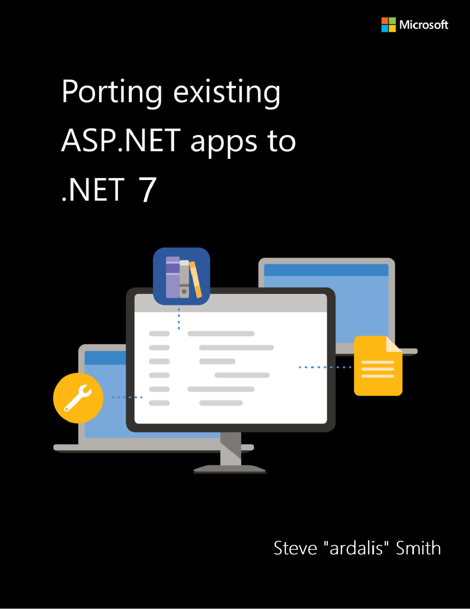
PUBLISHED BY Microsoft Developer Division, .NET, and Visual Studio product teams A division of Microsoft Corporation One Microsoft Way Redmond, Washington 98052-6399 Copyright © 2023 by Microsoft Corporation All rights reserved. No part of this book’s contents may be reproduced or transmitted in any form or by any means without the written permission of the publisher.
This book is provided “as-is” and expresses the author’s views and opinions. The views, opinions, and information expressed in this book, including URL and other Internet website references, may change without notice.
Some examples depicted herein are provided for illustration only and are fictitious. No real association or connection is intended or should be inferred.
Microsoft and the trademarks listed at https://www.microsoft.com on the “Trademarks” webpage are trademarks of the Microsoft group of companies.
Mac and macOS are trademarks of Apple Inc. The Docker whale logo is a registered trademark of Docker, Inc. Used by permission. All other marks and logos are property of their respective owners. Authors: Steve “ardalis” Smith, Software Architect and Trainer - Ardalis.com Participants and Reviewers: Nish Anil, Senior Program Manager, .NET team, Microsoft Mike Rousos, Principal Software Engineer, .NET team, Microsoft Scott Addie, Senior Content Developer, .NET team, Microsoft David Pine, Senior Content Developer, .NET team, Microsoft
This guide covers .NET 7 and updates related to the same technology “wave” (that is, Azure and other third-party technologies) coinciding in time with the .NET 7 release. This book covers migration of apps that are currently running on .NET Framework 4.x.
This guide’s audience is developers, development leads, and architects who are interested in migrating their existing apps written for ASP.NET MVC and Web API (.NET Framework 4.x) to the latest
.NET version. ASP.NET Web Forms developers will benefit from this guide but should also read the Blazor for ASP.NET Web Forms Developers e-book.
A secondary audience is technical decision-makers planning when to move their apps to .NET 7. The target audience for this book is .NET developers with large, existing apps that run on ASP.NET MVC and Web API. Apps built on ASP.NET Web Forms are outside of the focus of this book, though much of the information comparing .NET Framework and .NET Core/latest may still be relevant.
You can read this book straight through, as we expect many readers to do. This book will provide you first with considerations for whether you should port your app at all. That content is followed by architectural differences between .NET Framework and .NET Core. From there, you’ll learn strategies for migrating a large solution over time and how to port a real app. Next, the book includes deployment scenarios that address the need to run different apps while appearing as a single app to users. The book concludes with two case studies describing real apps that have migrated from ASP.NET MVC to ASP.NET Core.
Whether or not you choose to start from the first chapter, you can reference any of these chapters to learn about specific concepts:
• Architectural differences
• Migrate large solutions
• Sample migration
• Deployment scenarios
This guide is available both in PDF form and online. Feel free to forward this document or links to its online version to your team to ensure a common understanding of these concepts.
Introduction to porting apps to .NET 7 ................................................................................ 1 References ..................................................................................................................................................................................2 Migration considerations......................................................................................................................................................2
Is migration to .NET Core appropriate? .....................................................................................................................2 When is .NET Framework appropriate?......................................................................................................................3
References..............................................................................................................................................................................4
Migrate to ASP.NET Core 2.1 ..............................................................................................................................................4 Should apps run on .NET Framework with ASP.NET Core 2.1...........................................................................4
References..............................................................................................................................................................................5
Choose the right .NET Core version .................................................................................................................................5 References..............................................................................................................................................................................5
Strategies for migrating incrementally............................................................................................................................6 Migrating slice by slice......................................................................................................................................................6 Migrating layer by layer....................................................................................................................................................6
References..............................................................................................................................................................................7
Strategies for migrating ASP.NET Web Forms apps ..................................................................................................7 Separate business logic and other concerns............................................................................................................7 Implement client behavior and web APIs..................................................................................................................8 Consider Blazor....................................................................................................................................................................8 Summary.................................................................................................................................................................................8
References..............................................................................................................................................................................8
Deployment strategies...........................................................................................................................................................8 Cross-platform options.....................................................................................................................................................8 Cloud native development..............................................................................................................................................9 Leverage containers...........................................................................................................................................................9 Side-by-side deployment options................................................................................................................................9 IIS on Windows ....................................................................................................................................................................9 Other options on Windows.............................................................................................................................................9
References..............................................................................................................................................................................9
Additional migration resources....................................................................................................................................... 10 Official documentation .................................................................................................................................................. 10 GitHub .................................................................................................................................................................................. 10 Stack Overflow .................................................................................................................................................................. 11 YouTube channels............................................................................................................................................................ 11 Twitter, Gitter, Slack, and other community channels....................................................................................... 11 References........................................................................................................................................................................... 11
Architectural differences between ASP.NET MVC and ASP.NET Core...............................................12 Breaking changes.................................................................................................................................................................. 12 App startup differences between ASP.NET MVC and ASP.NET Core............................................................... 12
ASP.NET MVC Startup .................................................................................................................................................... 13 ASP.NET Core Startup..................................................................................................................................................... 13 Porting considerations................................................................................................................................................... 14
References........................................................................................................................................................................... 14
Hosting differences between ASP.NET MVC and ASP.NET Core....................................................................... 14
References........................................................................................................................................................................... 15
Serve static files in ASP.NET MVC and ASP.NET Core............................................................................................ 15 Host static files in ASP.NET MVC ............................................................................................................................... 15 Host static files in ASP.NET Core................................................................................................................................ 15
References........................................................................................................................................................................... 16
Dependency injection differences between ASP.NET MVC and ASP.NET Core........................................... 16 Dependency injection in ASP.NET Core .................................................................................................................. 16
References........................................................................................................................................................................... 17
Compare middleware to modules and handlers...................................................................................................... 17 ASP.NET modules and handlers................................................................................................................................. 17 ASP.NET Core middleware............................................................................................................................................ 17 Accessing HttpContext................................................................................................................................................... 17
References........................................................................................................................................................................... 18
Configuration differences between ASP.NET MVC and ASP.NET Core........................................................... 18 ASP.NET MVC configuration........................................................................................................................................ 19 ASP.NET Core configuration........................................................................................................................................ 19
Migrate configuration .................................................................................................................................................... 20 References........................................................................................................................................................................... 21
Routing differences between ASP.NET MVC and ASP.NET Core....................................................................... 21 Routing in ASP.NET MVC and Web API .................................................................................................................. 21 Route table ......................................................................................................................................................................... 21 Routing in .NET 7 ............................................................................................................................................................. 23 References........................................................................................................................................................................... 24
Logging differences between ASP.NET MVC and ASP.NET Core ...................................................................... 25 ASP.NET MVC logging ................................................................................................................................................... 25 ASP.NET Core logging.................................................................................................................................................... 25 Migrate logging................................................................................................................................................................ 26
References........................................................................................................................................................................... 26
Compare Razor Pages to ASP.NET MVC...................................................................................................................... 26
References........................................................................................................................................................................... 27
Compare ASP.NET Web API 2 and ASP.NET Core ................................................................................................... 27
References........................................................................................................................................................................... 27
Compare authentication and authorization between ASP.NET MVC and ASP.NET Core........................ 27 Authorization ..................................................................................................................................................................... 28
References........................................................................................................................................................................... 28
Compare ASP.NET Identity and ASP.NET Core Identity ........................................................................................ 28 Migrate from OWIN / Katana...................................................................................................................................... 29
References........................................................................................................................................................................... 29
Compare controllers in ASP.NET MVC and Web API with controllers in ASP.NET Core .......................... 29
References........................................................................................................................................................................... 30
Compare Razor usage in ASP.NET MVC and ASP.NET Core................................................................................ 30 Tag Helpers......................................................................................................................................................................... 30 Razor Pages........................................................................................................................................................................ 30
References........................................................................................................................................................................... 31
Compare ASP.NET SignalR and ASP.NET Core SignalR ......................................................................................... 31 Feature differences.......................................................................................................................................................... 31
References........................................................................................................................................................................... 31
Compare testing options between ASP.NET MVC and ASP.NET Core ............................................................ 32
References........................................................................................................................................................................... 32
Migrate large solutions to ASP.NET Core.....................................................................................................33 References ............................................................................................................................................................................... 33 Identify sequence of projects to migrate.................................................................................................................... 33
Unit tests.............................................................................................................................................................................. 37 Considerations for migrating many apps............................................................................................................... 37 Summary.............................................................................................................................................................................. 38 References........................................................................................................................................................................... 38
Understand and update dependencies........................................................................................................................ 38 Update class library dependencies............................................................................................................................ 38 Update NuGet package dependencies.................................................................................................................... 39 Migrate ASP.NET MVC projects.................................................................................................................................. 40 References........................................................................................................................................................................... 40
Strategies for migrating while running in production ........................................................................................... 40 Refactor the .NET Framework solution.................................................................................................................... 40 Extract front-end assets to a CDN............................................................................................................................. 41 Extract and migrate individual microservices ....................................................................................................... 41 Deploy multiple versions of the app side-by-side in IIS................................................................................... 41 Apply the Strangler pattern ......................................................................................................................................... 41 Multi-targeting approaches......................................................................................................................................... 42 Summary.............................................................................................................................................................................. 42 References........................................................................................................................................................................... 42
Example migration of eShop to ASP.NET Core..........................................................................................43 Run ApiPort to identify problematic APIs.................................................................................................................... 44 Update project files and NuGet reference syntax.................................................................................................... 47 Create new ASP.NET Core project.................................................................................................................................. 49
Migrating NuGet Packages .......................................................................................................................................... 51 Migrate static files............................................................................................................................................................ 53 Migrate C# files................................................................................................................................................................. 54
Migrate views ......................................................................................................................................................................... 56 Migrate app startup components .................................................................................................................................. 58
Configure MVC.................................................................................................................................................................. 58
Data access considerations............................................................................................................................................... 63
Migrate to Entity Framework Core............................................................................................................................ 64 Fix all TODO tasks................................................................................................................................................................. 67 Additional MVC customizations...................................................................................................................................... 68 Other dependencies ............................................................................................................................................................ 69 References ............................................................................................................................................................................... 69 More migration scenarios ................................................................................................................................................. 69
Migrate ASP.NET MVC 5 and WebApi 2 to ASP.NET Core MVC................................................................... 69 Migrate HttpResponseMessage to ASP.NET Core.............................................................................................. 70 Migrate content negotiation from ASP.NET Web API to ASP.NET Core.................................................... 71 Custom model binding.................................................................................................................................................. 71 Media formatters.............................................................................................................................................................. 73 Custom filters..................................................................................................................................................................... 73 Route constraints ............................................................................................................................................................. 74 Custom route handlers .................................................................................................................................................. 75 CORS support.................................................................................................................................................................... 76 Custom areas ..................................................................................................................................................................... 77 Integration tests for ASP.NET MVC and ASP.NET Web API............................................................................. 78 WCF client configuration............................................................................................................................................... 80 References........................................................................................................................................................................... 80
Deployment scenarios when migrating to ASP.NET Core .....................................................................81 Split a large web app........................................................................................................................................................... 81 Summary .................................................................................................................................................................................. 84 References ............................................................................................................................................................................... 85
Summary: Port existing ASP.NET Apps to .NET 7......................................................................................86
CHAPTER |
|---|
1
Introduction to porting apps to .NET 7
.NET Core and its latest version, .NET 7, represent a revolutionary step forward from .NET Framework. It offers a host of advantages over .NET Framework across the board from productivity to performance, from cross-platform support to developer satisfaction. ASP.NET Core was even voted the most-loved web framework (tied with Svelte) in the 2021 Stack Overflow developer survey. Clearly there are strong reasons to consider migrating.
Even before .NET 7 shipped, Microsoft was clear: .NET Core is the Future of .NET. To quote this article: New apps should be built on .NET Core. .NET Core is where future investments in .NET will happen. Existing apps are safe to remain on .NET Framework which will be supported. Existing apps that want to take advantage of the new features in .NET should consider moving to .NET Core. As we plan into the future, we will be bringing in even more capabilities to the platform. Today, .NET 7 is what new apps should target, and if you’re migrating an existing app from .NET Framework, .NET 7 is your ideal target framework. However, upgrading your app to ASP.NET Core will require some effort. That effort should be balanced against business value and goals. .NET Framework apps have a long life ahead of them, with support built into Windows for the foreseeable future. What are some of the questions you should consider before deciding migration to .NET 7 is appropriate? What are the expected advantages? What are the tradeoffs? How much effort is involved? These obvious questions are just the beginning, but make for a great starting point as teams consider how to support their customers’ needs with apps today and tomorrow.
• Is migration to .NET 7 appropriate?
• When does it make sense to remain on .NET Framework?
• Should apps target ASP.NET Core 2.1 as a stepping stone?
• How should teams choose the right .NET version to target?
• What strategies are recommended for incremental migration of large apps?
• What deployment strategies should be considered when porting to .NET 7?
• Where can we find additional resources?
This introductory chapter addresses all of these questions and more before moving on to more specific and technical considerations in future chapters.
• 2021 Stack Overflow developer survey most loved web frameworks
• .NET Core is the Future of .NET
The most fundamental question teams must answer when it comes to porting their apps to .NET Core is, should they port at all? In some cases, the best path forward is to remain on .NET Framework using ASP.NET MVC and/or Web API. This chapter considers reasons why moving to .NET Core makes sense. The chapter also considers scenarios and counterpoints for staying on .NET Framework.
Let’s start with some of the reasons why you might want to move to .NET Core/.NET 7. There are quite a few, so don’t consider this list exhaustive.
Apps built on .NET Core are truly cross-platform and can run on Windows, Linux, and macOS. Not only can your developers use whatever hardware they want, but you can also host your app anywhere. Examples range from local IIS to Azure in the cloud or from Linux Docker containers to IoT devices.
Apps built with .NET Core are running on one of the fastest tech stacks available anywhere. ASP.NET MVC apps often see performance improvements on ASP.NET Core, especially if they’re updated to take advantage of some new features available in .NET Core.
For the above reasons and others, .NET Core apps are well-suited to running in cloud hosting environments. Lightweight and fast, .NET Core apps can be deployed to Azure App Services or containers and scaled horizontally as needed to meet immediate system demand.
For many apps, while they’ve continued to meet customer and business needs, technical debt has accumulated and maintaining the app has grown expensive. ASP.NET Core apps are more easily tested than ASP.NET MVC apps, making them easier to refactor and extend with confidence.
Modular ASP.NET Core is modular, using NuGet packages as a first-class part of the framework. Apps built for
.NET Core all support dependency injection, making it easy to compose solutions from whatever implementations are needed for a given environment. Building microservices with .NET Core is easier
than with ASP.NET MVC with its dependency on IIS, which opens up additional options to break up large apps into smaller modules.
Staying on a modern, actively developed technology stack has a host of advantages. New features and C# language features will only be added to .NET Core. The .NET Framework has had its last release with version 4.8, and versions of C# beyond 8 won’t target .NET Framework. While ASP.NET MVC will remain supported by Microsoft for many years, the best and brightest .NET software developers are likely looking to use the more modern .NET Core framework, with all of the advantages it offers (only some of which are summarized above). Finding developers with the skills to maintain an ASP.NET MVC app will start to become a challenge at some point, as will finding online training and troubleshooting assistance. There probably aren’t that many new blog posts being written about ASP.NET MVC 5, while there are plenty being written for .NET 7, for example.
There are many compelling reasons to consider migrating to .NET Core, which presumably is why you’re reading this book! But let’s consider some disadvantages and reasons why it may make more sense to remain on the .NET Framework.
The biggest reason to stay on .NET Framework is when an app isn’t under active development and wouldn’t benefit substantially from the advantages listed above. In that case, there probably isn’t a good business case to incur the cost of porting the app. If your app might benefit from the advantages .NET Core offers, you may still need to stay on .NET Framework if you need certain technologies that are unavailable on .NET Core. There are some .NET technologies that are unavailable on .NET Core, including AppDomains, Remoting, Code Access Security (CAS), Security Transparency, and System.EnterpriseServices. A brief summary of these technologies and their alternatives is included here. For more detailed guidance, see the documentation.
Application domains (AppDomains) isolate apps from one another. AppDomains require runtime support and can be expensive. Creating additional app domains isn’t supported, and there are no plans to add this capability to .NET Core in the future. For code isolation, use separate processes or containers as an alternative. Some customers use AppDomains as a way of unloading assemblies. In
.NET Core AssemblyLoadContext provides an alternative way to unload assemblies. WCF
.NET Core and .NET 5+ support WCF clients. Server-side WCF is possible through CoreWCF, which is officially supported by Microsoft as of April 2022. Apps that require server-side WCF functionality can also consider a different communication technology (such as gRPC or REST) as part of a migration.
There is a WCF client port available from the .NET Foundation. It’s entirely open source, cross platform, and supported by Microsoft.
To learn more about migrating from WCF to gRPC, consult the gRPC for WCF Developers ebook.
.NET Remoting was identified as a problematic architecture. It’s used for cross-AppDomain communication, which is no longer supported. Also, Remoting requires runtime support, which is expensive to maintain. For these reasons, .NET Remoting isn’t supported on .NET Core, and the product team doesn’t plan on adding support for it in the future. There are several alternative messaging strategies and implementations you can use to replace remoting in your .NET Core apps.
Neither of these technologies are supported by .NET Core. Instead, the recommendation is to use security boundaries provided by the operating system. For example, virtualization, containers, or user accounts. Run processes with the minimal set of privileges necessary.
.NET Framework Technologies Unavailable on .NET Core
ASP.NET Core 2.1 is an interesting release because it’s the most recently supported ASP.NET Core release that supported both .NET Core and .NET Framework runtimes. As such, it may offer an easier upgrade path for some apps when compared to upgrading all parts of the app to .NET Core/.NET 7 at once. Although support for .NET Core 2.1 ended in August 2021, it may make sense as an interim step for some apps. Also, support for ASP.NET Core 2.1 running on .NET Framework will continue for as long as its underlying .NET Framework is supported. A complete list of currently supported ASP.NET Core 2.1 packages is available for reference.
Should apps run on .NET Framework with ASP.NET Core 2.1
ASP.NET Core 2.2 and earlier supported both .NET Core and .NET Framework runtimes. Does it make sense to migrate some or all of an app to ASP.NET Core 2.1 as a stepping stone, before porting over completely to .NET Core? Apps, or subsets of apps, could see their front-end ASP.NET logic ported to use ASP.NET Core, while still consuming .NET Framework libraries for business logic and infrastructure consumption. This approach may make sense when there’s a relatively thin UI layer without much business logic, and a much larger set of functionality in class libraries.
The main benefit of porting just the front-end web layer to ASP.NET Core 2.1 is that the existing .NET class libraries can remain as is during the initial migration. They may be in continued use by other
.NET apps or simply don’t need to be in scope for the first iteration of a planned full migration to .NET Core. Reducing the scope of the initial migration for large apps helps provide incremental goals that act as stepping stones toward the desired end state, which is often a complete port to .NET Core.
If you have an existing app that may use this strategy, some things you can do today to help prepare for the process are to move as much business logic, data access, and other non-UI logic out of the ASP.NET projects and into separate class libraries as possible. It will also help if you have automated
test coverage of your system, so that you can verify behavior remains consistent before and after the migration.
If your app is so large that you can’t migrate the entire web app at once, and you need to be able to deploy the new ASP.NET Core app side-by-side with the existing ASP.NET app, there are deployment strategies that can be used to achieve this. These are covered in Chapter 5: Deployment Scenarios.
Keep in mind that ASP.NET Core 2.1 was the last LTS release of .NET Core that supported running on .NET Framework and consuming .NET Framework libraries. Although the release is now unsupported on .NET Core, it continues to be supported for use with .NET Framework. It will remain supported for as long as the specific .NET Framework version is supported. For more information, see ASP.NET Core
2.1 on .NET Framework.
Migrating from ASP.NET to ASP.NET Core 2.1 ASP.NET Core 2.1 on .NET Framework ASP.NET Core 2.1 Supported Packages
The largest consideration for most organizations when choosing which version of .NET to target is the support lifecycle. Long Term Support (LTS) releases ship less frequently but have a longer support window than Standard Term Support (STS) releases. Currently, LTS releases are scheduled to ship every other year. Customers can choose which releases to target, and can install different releases of
.NET side by side on the same machine. LTS releases will receive only critical and compatible fixes throughout their lifecycle. STS releases will receive these same fixes and will also be updated with compatible innovations and features. LTS releases are supported for three years after their initial release. STS releases are supported for six months after a subsequent STS or LTS release.
.NET 7 is the latest STS release; .NET 6 is the latest LTS release. Customers looking to migrate a large .NET Framework app to .NET today may be looking for a stable destination, given that they haven’t already made the move to an earlier version of .NET Core. In this case, the best .NET version to target for the migration is .NET 6, which is the most recent LTS version. While support for .NET Core 3.1 ended in December 2022, support for .NET 6 will continue until November 2024. Other customers may want to ensure they’re upgrading to the latest supported version, so that postmigration they’re not already behind a version. These customers will want to target .NET 7 for the migration. In either case, there is very little difference in the migration process. This book assumes .NET Framework apps will be upgraded to .NET 7.
.NET and .NET Core Support Policy
The biggest challenge with migrating any large app is determining how to break the process into smaller tasks. There are several strategies that can be applied for this purpose, including breaking the app into horizontal layers such as UI, data access, business logic, or breaking up the app into separate, smaller apps. Another strategy is to upgrade some or all of the app to different framework versions on the way to a recent .NET Core release. One approach you could use is to migrate vertical slices of the app, rather than attempting to migrate one horizontal layer at a time. Let’s consider each of these different approaches.
One successful approach to migrating is to identify vertical slices of functionality and migrate them to the target platform one by one. The first step is to create a new ASP.NET Core 7 app. Next, identify the individual page or API endpoint that will be migrated first. Build out just the necessary functionality to support this one route in the new ASP.NET Core app. Then use HTTP rewriting and/or a reverse proxy to start sending requests for these pages or endpoints to the new app rather than the ASP.NET app. This approach is well-suited to API projects, but can also work for many MVC apps.
When migrating slice by slice, the entire stack of the individual API endpoint or requested route is recreated in the new project or solution. The very first such slice typically requires the most effort, since it will typically need several projects to be created and decisions to be made about data access and solution organization. Once the first slice’s functionality mirrors the existing app’s, it can be deployed and the existing app can redirect to it or simply be removed. This approach is then repeated until the entire app has been ported to the new structure.
Some specific guidance on how to follow this strategy using IIS is covered in Chapter 5, Deployment Scenarios.
Consider the challenge of migrating a large ASP.NET 4.5 app. One approach is to migrate the entire app directly from .NET Framework 4.5 to .NET 7. However, this approach needs to account for every breaking change between the two frameworks and versions, which are substantial. Performing this work on one project at a time provides a set of stepping stones so that the entire solution doesn’t need to be moved at once.
One piece of the .NET ecosystem that helps with interoperability between different .NET frameworks is
.NET Standard. .NET Standard allows libraries to build against an agreed upon set of common APIs, ensuring they can be used in any .NET app. .NET Standard 2.0 is notable because it covers most base class library functionality used by most .NET Framework and .NET Core apps. Unfortunately, the earliest version of .NET with support for .NET Standard 2.0 is .NET Framework 4.6.1, and there are a number of updates in .NET Framework 4.8 that make it a compelling choice for initial upgrades.
One approach to incrementally upgrade a .NET Framework 4.5 system layer-by-layer is to first update its class library dependencies to .NET Framework 4.8. Then, modify these libraries to be .NET Standard class libraries. Use multi-targeting and conditional compilation, if necessary. This step can be helpful
in scenarios where app dependencies require .NET Framework and cannot easily be ported directly to use .NET Standard and .NET Core. Since .NET Framework libraries can be consumed by ASP.NET Core 2.1 apps, the next step is to migrate some or all of the web functionality of the app to ASP.NET Core 2.1 (as described in the previous chapter). This is a “bottom up” approach, starting with low level class library dependencies and working up to the web app entry point.
Once the app is running on ASP.NET Core 2.1, migrating it to .NET 7 in isolation is relatively straightforward. The most likely challenge during this step is updating incompatible dependencies to support .NET Core and possibly higher versions of .NET Standard. For apps that don’t have problematic dependencies on .NET Framework-only libraries, there’s little reason to upgrade to
ASP.NET Core 2.1. Porting directly to ASP.NET Core 7 makes more sense and requires less effort.
.NET 7 is the latest version of .NET and will be supported until six months after the next STS or LTS release (scheduled for November 2023) - so most likely support will last at least until May 2024. Many teams looking to migrate today will choose to upgrade to .NET 7.
Instead of a “bottom up” approach, another alternative is to start with the web app (or even the entire solution) and use an automated tool to assist with the upgrade. The .NET Upgrade Assistant tool can be used to help upgrade .NET Framework apps to .NET Core / .NET 7. It automates many of the common tasks related to upgrading apps, such as modifying project file format, setting appropriate target frameworks, updating NuGet dependencies, and more.
• What is .NET Standard?
• Migrate from ASP.NET Core 6.0 to 7.0
• Announcing .NET 6 - The Fastest .NET Yet
• Introducing .NET 5
• Migrate from ASP.NET Core 3.1 to 6.0 LTS
• .NET Upgrade Assistant tool
This book offers guidance for migrating large ASP.NET MVC and Web API apps to .NET Core. Some of these ASP.NET apps may also include Web Forms (.aspx) pages that must be addressed. ASP.NET Web Forms isn’t supported in ASP.NET Core (nor are ASP.NET Web Pages). Typically, the functionality of these pages must be rewritten when porting to ASP.NET Core. There are, however, some strategies you can apply before or during such migration to help reduce the overall effort required.
Web Forms will continue to be supported for quite some time. One option may be to keep this functionality in an ASP.NET 4.x app.
The less code in your ASP.NET Web Forms pages, the better. When possible, keep business logic and other concerns like data access in separate classes, ideally in separate class libraries. These class libraries can be ported to .NET Standard and consumed by any ASP.NET Core app.
Consider the choice between implementing logic in Web Forms or in the browser with the help of API calls. Favor the latter. Migrating APIs to ASP.NET Core is supported. Client-side behavior should be independent of the server-side stack your app is using. Using this approach has the added benefit of providing a more responsive user experience.
Blazor lets you build interactive web UIs with C# instead of JavaScript. It can run on the server or in the browser using WebAssembly. ASP.NET Web Forms apps may be ported page-by-page to Blazor apps. For more information on porting Web Forms apps to Blazor, see Blazor for ASP.NET Web Forms Developers. In addition, many Web Forms controls have been ported to Blazor as part of an opensource community project, Blazor Web Forms Components. With these components, you can more easily port Web Forms pages to Blazor even if they use the built-in Web Forms controls.
Migrating directly from ASP.NET Web Forms to ASP.NET Core isn’t supported. However, there are strategies to make moving to ASP.NET Core easier. You can migrate your Web Forms functionality to ASP.NET Core successfully by:
• Keeping non-web functionality out of your projects.
• Using web APIs wherever possible.
• Considering Blazor as an option for a more modern UI.
• Free e-book: Blazor for ASP.NET Web Forms Developers
• Blazor Web Forms Components (Community Project)
One consideration as you plan the migration of your large ASP.NET app to ASP.NET Core is how you’ll deploy the new app. With ASP.NET, deployment options were limited to IIS on Windows. With ASP.NET Core, a much wider array of deployment options is available.
Because .NET Core runs on Linux, you’ll find some hosting options available that weren’t a consideration previously. Linux-based hosting may be preferable for the following reasons:
• Your organization has infrastructure or expertise.
• Hosting providers offer attractive features or pricing for Linux-based hosting.
.NET Core opens the door to these options.
Most organizations today are using cloud platforms for at least some of their software capabilities. With an app migration to .NET Core, it’s a good time to consider whether the app should be purposefully written with cloud hosting in mind. Such cloud native apps are better able to apply cloud capabilities like serverless, microservices, and can be less concerned with the low-level details of how and where they may be deployed.
Learn more about cloud native app development in this free e-book, Architecting Cloud Native .NET Applications for Azure.
Modern apps often leverage containers as a means of reducing variation between hosting environments. By deploying an app to a particular container, the container-hosted app will run the same whether it’s running on a developer’s laptop or in production. As part of a migration to .NET Core, it may make sense to consider whether the app would benefit from deployment via container, either as a full monolith or broken up into multiple smaller containerized apps.
Migrating large .NET Framework apps to .NET Core often requires a substantial effort. Most organizations will want to be able to break this effort up in some fashion, so that pieces of the app can be migrated and deployed in production before the entire migration is complete. Running both the original ASP.NET app and its newly-migrated ASP.NET Core sub-app(s) side by side is a frequently cited goal. This can be achieved through a number of mechanisms including leveraging IIS routing, which is covered in chapter 5. Other options include leveraging app gateways or cloud design patterns like backends for frontends to manage sets of ASP.NET Web APIs and ASP.NET Core API endpoints.
You can continue hosting your apps on IIS running on Windows. This is a fine option for customers who want to take advantage of ASP.NET Core features without changing their current deployment model. While moving to ASP.NET Core provides more options in terms of how and where to deploy your apps, it doesn’t require that you change from the status quo of using the proven combination of IIS on Windows.
You can host apps side-by-side apps on Windows using any combination of Kestrel, HTTP.sys, and IIS hosts, in addition to Docker containers, if needed. If your app requires a combination of Windows and Linux services, hosting on a Windows server with WSL and/or Linux Docker containers provides a single server solution to hosting all parts of the app.
• Host and deploy ASP.NET Core
• Host ASP.NET Core on Windows with IIS
• Troubleshooting ASP.NET Core on Azure App Service and IIS
As you’re planning and executing your migration from ASP.NET MVC and/or Web API to ASP.NET Core, there are a number of resources available to help beyond this book. Make a note of these and leverage them where appropriate to help you overcome obstacles you encounter on your migration journey.
The official documentation website, learn.microsoft.com, has the most up-to-date information available about versions, frameworks, breaking changes, and support options. You’ll find many links in this book to docs articles, but for any problem you’re facing it’s often worth at least doing a quick search of the docs to see if there is already information covering the issue and offering a solution or workaround.
Because .NET Core is an open-source project, many issues are discovered, reported, discussed, and fixed on GitHub. Microsoft has several GitHub organizations in which you’ll find repositories that may be helpful. A partial list of these organizations and some of their public repositories are listed below:
• Microsoft
– ASP.NET API Versioning
• dotnet
– ASP.NET Core
– .NET Runtime
– Entity Framework Core
– C# Language
– Docs
– Docs Samples
– Try Convert
– .NET Upgrade Assistant tool
• .NET Architecture Reference Apps
– eShopModernizing
– eShopOnWeb
– eShopOnContainers
If you run into problems with your migration, these GitHub repositories are a good place to report them. The product teams watch the issues and typically respond quickly to bug reports (though “how to” questions may be more appropriately directed to Stack Overflow).
Stack Overflow has a wealth of information in the form of previous questions asked and answers given, with the most helpful answers listed first and marked if they solved the problem. In addition to searching for an existing solution to a problem you may encounter, you can of course also ask a question yourself and hope for some response from the .NET community. Don’t forget you can narrow down a search by using tags, and remember to use appropriate tags when you ask questions to maximize the chances of someone with the experience needed noticing your question.
YouTube has a huge amount of .NET and .NET Core video content, which may include useful tutorials or walkthroughs covering any scenario you may encounter. Consider searching it separately if your other efforts to find help online come up short. Here are a few good places to get started:
• dotnet
• Visual Studio
You’ll find many other ways to connect with .NET developers on the .NET Community page. You can also join the DotNetEvolution Discord server. Additionally, many product teams and team members are on Twitter as well as in various other communities. You can follow and communicate with the
author of this book on Twitter as well.
• Overview of porting from .NET Framework to .NET Core
• .NET Upgrade Assistant tool
• Migrate from ASP.NET to ASP.NET Core
• .NET Community Resources
CHAPTER |
|---|
2
Architectural differences between ASP.NET MVC and ASP.NET Core
There are many architectural differences between ASP.NET MVC on .NET Framework and ASP.NET Core. It’s important to have a broad understanding of these differences as teams evaluate the work involved in porting their ASP.NET MVC apps to ASP.NET Core. This chapter looks at each of the ways in which ASP.NET Core differs substantially from ASP.NET MVC.
.NET Core is a cross-platform rewrite of .NET Framework. There are many breaking changes between the two frameworks. The following sections identify specific differences between how ASP.NET MVC and ASP.NET Core apps are designed and developed. Take care to also examine the documentation to determine which framework libraries you’re using that may need to change. In many cases, a replacement NuGet package exists to fill in any gaps left between .NET Framework and .NET Core. In rare cases, you may need to find a third-party solution or implement new custom code to address incompatibilities.
ASP.NET MVC apps lived entirely within Internet Information Server (IIS), the primary web server available on Windows operating systems. Unlike ASP.NET MVC, ASP.NET Core apps are executable apps. You can run them from the command line, using dotnet run. They have an entry point method like all C# programs, typically public static void Main() or a similar variation (perhaps with arguments or async support). This is perhaps the biggest architectural difference between ASP.NET Core and ASP.NET MVC, and is one of several differences that allows ASP.NET Core to run on non-Windows systems.
Hosted within IIS, ASP.NET apps rely on IIS to instantiate certain objects and call certain methods when a request arrives. ASP.NET creates an instance of the Global.asax file’s class, which derives from HttpApplication. When the first request is received, before handling the request itself, ASP.NET calls the Application_Start method in the Global.asax file’s class. Any logic that needs to run when the ASP.NET MVC app begins can be added to this method.
Many NuGet packages for ASP.NET MVC and Web API use the WebActivator package to let them run some code during app startup. By convention, this code would typically be added to an App_Start folder and would be configured via attribute to run either immediately before or just after Application_Start.
It’s also possible to use the Open Web Interface for .NET (OWIN) and Project Katana with ASP.NET MVC. When doing so, the app will include a Startup.cs file that is responsible for setting up request middleware in a way that’s very similar to how ASP.NET Core behaves. If you need to run code when your ASP.NET MVC app starts up, it will typically use one of these approaches.
As noted previously, ASP.NET Core apps are standalone programs. As such, they typically include a
Program.cs file containing the entry point for the app. A typical example of this file is shown in Figure 2-1. Notice that in .NET 7, this file is streamlined by the use of implicit using statements and top-level statements, eliminating the need for a lot of “boiler plate” code.
var builder = WebApplication.CreateBuilder(args); // Add services to the container. builder.Services.AddRazorPages(); var app = builder.Build(); // Configure the HTTP request pipeline. if (!app.Environment.IsDevelopment()) { app.UseExceptionHandler("/Error"); // The default HSTS value is 30 days. You may want to change this for production scenarios, see https://aka.ms/aspnetcore-hsts. app.UseHsts(); } app.UseHttpsRedirection(); app.UseStaticFiles(); app.UseRouting(); app.UseAuthorization(); app.MapRazorPages(); app.Run(); |
|---|
Figure 2-1. A typical ASP.NET Core Program.cs file.
The code shown in Figure 2-1 uses a builder to configure the host and its services. Then, it creates the request pipeline for the app, which controls how every request to the app is handled.
Previous versions of .NET would use a separate Startup.cs file, referenced by Program.cs. This approach is still supported in .NET 7, but is no longer the default approach.
In addition to code related to configuring the app’s services and request pipeline, apps may have other code that must run when the app begins. Such code is typically placed in Program.cs or registered as an IHostedService, which will be started by the generic host when the app starts.
The IHostedService interface just exposes two methods, StartAsync and StopAsync. You register the interface when configuring the app’s services and the host does the rest, calling the StartAsync method before the app starts up.
Teams looking to migrate their apps from ASP.NET MVC to ASP.NET Core need to identify what code is being run when their app starts up and determine the appropriate location for such code in their ASP.NET Core app. For custom code needed to run when the app starts up, especially async code, the recommended approach is typically to put such code into IHostedService implementations.
• ASP.NET Application Life Cycle Overview for IIS 7
• ASP.NET Application Life Cycle Overview for IIS 5 and 6
• Getting Started with OWIN and Katana
• WebActivator
• App Startup in ASP.NET Core
• .NET Generic Host in ASP.NET Core
• IHostedService
ASP.NET MVC apps are hosted in IIS, and may rely on IIS configuration for their behavior. This often includes IIS modules. As part of reviewing an app to prepare to port it from ASP.NET MVC to ASP.NET Core, teams should identify which modules, if any, they’re using from the list of IIS Modules installed on their server.
ASP.NET Core apps can run on a number of different servers. The default cross platform server, Kestrel, is a good default choice. Apps running in Kestrel can be hosted by IIS, running in a separate process. On Windows, apps can also run in process on IIS or using HTTP.sys. Kestrel is generally recommended for best performance. HTTP.sys can be used in scenarios where the app is exposed to the Internet and required capabilities are supported by HTTP.sys but not Kestrel.
Kestrel does not have an equivalent to IIS modules (though apps hosted in IIS can still take advantage of IIS modules). To achieve equivalent behavior, middleware configured in the ASP.NET Core app itself is typically used.
• IIS Modules
• ASP.NET Core Middleware
• ASP.NET Core Servers
Most web apps involve a combination of server-side logic and static files that must be sent to the client as-is. How should your migration from ASP.NET MVC to ASP.NET Core handle serving static files?
ASP.NET MVC apps, hosted by IIS, typically host static files directly from the app. ASP.NET MVC supports placing static files side by side with files that should be kept private on the server. IIS and ASP.NET require explicitly restricting certain files or file extensions from being served from the folder in which an ASP.NET app is hosted.
For many static files, using a content delivery network (CDN) is a good practice. Static content hosting allows better performance while reducing load and bandwidth from app servers.
It may be surprising, but ASP.NET Core doesn’t have built-in support for static files. This feature that has always existed as just a part of ASP.NET, enabled by IIS, isn’t intrinsic to ASP.NET Core or its Kestrel web server. To serve static files from an ASP.NET Core app, you must configure static files middleware.
With static files middleware configured, an ASP.NET Core app will serve all files located in a certain folder (typically /wwwroot). No other files in the app or project folder are at risk of being accidentally exposed by the server. No special restrictions based on file names or extensions need to be configured, as is the case with IIS. Instead, developers explicitly choose to expose files publicly when they place them in the wwwroot folder. By default, files outside of this folder aren’t shared.
Because support for static files uses middleware, any other middleware can be applied as part of the same request pipeline. Examples of middleware include authentication, caching, and compression.
Of course, CDNs remain a good choice for ASP.NET Core apps for all the same reasons they’re used in ASP.NET MVC apps. As part of preparing to migrate to .NET Core, if there are benefits your app could realize from using a CDN, it would be good to move static files to a CDN before migrating to .NET Core. Doing so reduces the migration effort’s overall scope for static assets.
• Static content hosting
• Static files in ASP.NET Core
Although dependency injection (DI) isn’t built into ASP.NET MVC or Web API, many apps enable it by adding a NuGet package with an inversion of control (IOC) container. These are sometimes referred to as DI containers, for dependency injection (or inversion). Some of the most popular containers used in ASP.NET MVC apps include:
• Autofac
• Unity
• Ninject
• StructureMap (deprecated)
• Castle Windsor
If your ASP.NET MVC app isn’t using DI, you will probably want to investigate the built-in support for DI in ASP.NET Core. DI promotes loose coupling of modules in your app and enables better testability and adherence to principles like SOLID.
If your app does use DI, then probably your best course of action is to see if the container you’re using supports ASP.NET Core. If so, you may be able to continue using it and your custom configuration rules describing your type mappings and lifetimes.
Either way, you should consider using the built-in support for DI that ships with ASP.NET Core, as it may meet your app’s needs.
ASP.NET Core assumes apps will use DI. It’s not just built into the framework, but is required in order to bring support for framework features into your ASP.NET Core apps. In app startup, calls are made to configure services using the builder.Services property of the web host builder. This property works with the application’s DI container (service collection/service provider) and is used to create and inject service dependencies within the app. Built-in ASP.NET Core features like Entity Framework Core, Identity, and even MVC are brought into the app by configuring them as services during application startup.
In addition to using the default implementation, apps can still use custom containers. The documentation covers how to replace the default service container.
DI is fundamental to ASP.NET Core. If your team isn’t already well-versed in this practice, you’ll want to understand it before porting your app.
• Dependency Injection in .NET
• Dependency Injection in ASP.NET Core
If your existing ASP.NET MVC or Web API app uses OWIN/Katana, you’re most likely already familiar with the concept of middleware and porting it to ASP.NET Core should be fairly straightforward. However, most ASP.NET apps rely on HTTP modules and HTTP handlers instead of middleware. Migrating these to ASP.NET Core requires extra effort.
HTTP modules and HTTP handlers are an integral part of the ASP.NET architecture. While a request is being processed, each request is processed by multiple HTTP modules (for example, the authentication module and the session module) and is then processed by a single HTTP handler. After the handler has processed the request, the request flows back through the HTTP modules.
If your app is using custom HTTP modules or HTTP handlers, you’ll need a plan to migrate them to ASP.NET Core. The most likely replacement in ASP.NET Core is middleware.
ASP.NET Core defines a request pipeline in each app’s Configure method. This request pipeline defines how an incoming request is handled by the app, with each method in the pipeline calling the next method until eventually a method terminates, and the chain of middleware terminates and returns back up the stack. Middleware can target all requests, or can be configured to only map to certain requests based on the requested path or other factors. It can be configured wholly in the Configure method of an app, or implemented in a separate class.
Behavior in an ASP.NET MVC app that uses HTTP modules is probably best suited to custom middleware. Custom HTTP handlers can be replaced with custom routes or endpoints that respond to the same path.
Many .NET apps reference the current request’s context through HttpContext.Current. This static access can be a common source of problems with testing and other code usage outside of individual requests. When building ASP.NET Core apps, access to the current HttpContext should be provided as a method parameter on middleware, as this sample demonstrates:
public class Middleware {
private readonly RequestDelegate _next; public Middleware(RequestDelegate next) {
_next = next;
} public Task Invoke(HttpContext httpContext) {
return _next(httpContext); }
}
Similarly, ASP.NET Core filters pass a context argument to their methods, from which the current HttpContext can be accessed:
public class MyActionFilterAttribute : ActionFilterAttribute { public override void OnResultExecuting(ResultExecutingContext context) { var headers = context.HttpContext.Request.Headers; // do something based on a header base.OnResultExecuting(context); } } |
|---|
If you have components or services that require access to HttpContext, rather than using a static call like HttpContext.Current you should instead use constructor dependency injection and the IHttpContextAccessor interface:
public class MyService {private readonly IHttpContextAccessor _httpContextAccessor; public MyService(IHttpContextAccessor httpContextAccessor) { _httpContextAccessor = httpContextAccessor; } public void DoSomething() { var currentContext = _httpContextAccessor.HttpContext; } } |
|---|
This approach eliminates the static coupling of the method to the current context while providing access in a testable fashion.
• ASP.NET HTTP modules and HTTP handlers
• ASP.NET Core middleware
How configuration values are stored and read changed dramatically between ASP.NET and ASP.NET Core.
In ASP.NET apps, configuration uses the built-in .NET configuration files, web.config in the app folder and machine.config on the server. Most ASP.NET MVC and Web API apps store their settings in the configuration file’s appSettings or connectionStrings elements. Some also use custom configuration sections that can be mapped to a settings class.
Configuration in a .NET Framework app is accessed using the System.Configuration.ConfigurationManager class. Unfortunately, this class provides static access to the configuration elements. As a result, very few ASP.NET MVC apps tend to abstract access to their configuration settings or inject them where needed. Instead, most .NET Framework apps tend to directly access the configuration system anywhere the app needs to use a setting.
Typical ASP.NET MVC configuration access:
string connectionString = ConfigurationManager.ConnectionStrings["DefaultConnection"] .ConnectionString; |
|---|
In ASP.NET Core apps, configuration is, itself, configurable. However, most apps use a set of defaults provided as part of the standard project templates and the ConfigureWebHostDefaults method used in them. The default settings use JSON formatted files, with the ability to override settings in the base appsettings.json file with environment-specific files like appsettings.Development.json. Additionally, the default configuration system further overrides all file-based settings with any environment variable that exists for the same named setting. This is useful in many scenarios and is especially useful when deploying to a hosting environment, since it eliminates the need to worry about whether deploying configuration files will accidentally overwrite important production configuration settings. Configuration values can also be provided as command line arguments.
Accessing configuration values can be done in many ways in .NET Core. Because dependency injection is built into .NET Core, configuration values are generally accessed through an interface that is injected into classes that need them. This can involve passing a interface like IConfiguration, but usually it’s better to pass just the settings required by the class using the options pattern.
Figure 2-2 shows how to pass IConfiguration into a Razor Page and access configuration settings from it: using Microsoft.Extensions.Configuration;
public class TestModel : PageModel {
private readonly IConfiguration _configuration; public TestModel(IConfiguration configuration) {
_configuration= configuration;
} public ContentResult OnGet()
var myKeyValue = _configuration["MyKey"]; // ...
} }
Figure 2-2. Accessing configuration values with IConfiguration. Using the options pattern, settings access is similar but is strongly typed and more specific to the setting(s) needed by the consuming class, as Figure 2-3 demonstrates.
public class PositionOptions { public const string Position = nameof(Position); public string Title { get; set; } public string Name { get; set; } } public class Test2Model : PageModel { private readonly PositionOptions _options; public Test2Model(IOptions _options = options.Value; } public ContentResult OnGet() { return Content($"Title: {_options.Title}\nName: {_options.Name}"); } } |
|---|
Figure 2-3. Using the options pattern in ASP.NET Core.
For the options pattern to work, the options type must be configured in ConfigureServices when the app starts up:
// required in ConfigureServices services.Configure |
|---|
When considering how to port an app’s configuration settings from .NET Framework to .NET Core, the first step is to identify all of the configuration settings that are being used. Most of these will be in the web.config file in the app’s root folder, but some apps expect settings to be found in the shared machine.config file as well. These settings will include elements of the appSettings element, the connectionStrings element, and any custom configuration elements as well. In .NET Core, all of these settings are typically stored in the appsettings.json file.
Once all settings in the config files have been cataloged, the next step should be to identify where and how the settings are used in the app itself. If some settings aren’t being used, these can probably be omitted from the migration. For each setting, note all of the places it’s being used so you can be sure you don’t miss any when you migrate the code.
If you’re still maintaining the ASP.NET app, it may be helpful to avoid static references to ConfigurationManager and replace them with access through interfaces. This will ease the transition to ASP.NET Core’s configuration system. In general, static access to external resources makes code harder to test and maintain, so be on the lookout for anywhere else the app may be following this pattern.
• Configuration in ASP.NET Core
• Options pattern in ASP.NET Core
• Migrate configuration to ASP.NET Core
• Refactoring Static Config Access
Routing is responsible for mapping incoming browser requests to particular controller actions (or Razor Pages handlers). This section covers how routing differs between ASP.NET MVC (and Web API) and ASP.NET Core (MVC, Razor Pages, and otherwise).
ASP.NET MVC offers two approaches to routing:
1. The route table, which is a collection of routes that can be used to match incoming requests to controller actions.
2. Attribute routing, which performs the same function but is achieved by decorating the actions themselves, rather than editing a global route table.
The route table is configured when the app starts up. Typically, a static method call is used to configure the global route collection, like so:
public class MvcApplication : System.Web.HttpApplication {
public static void RegisterRoutes(RouteCollection routes) {
routes.IgnoreRoute("{resource}.axd/{*pathInfo}"); routes.MapRoute(
name: "Default", url: "{controller}/{action}/{id}", defaults: new { controller = "Home", action = "Index", id = "" }, constraints: new { id = "\\d+" }
);
} protected void Application_Start()
RegisterRoutes(RouteTable.Routes); }
}
In the preceding code, the route table is managed by the RouteCollection type, which is used to add new routes with MapRoute. Routes are named and include a route string, which can include parameters for controllers, actions, areas, and other placeholders. If an app follows a standard convention, most of its actions can be handled by this single default route, with any exceptions to this convention configured using additional routes.
Routes that are defined with their actions may be easier to discover and reason about than routes defined in an external location. Using attribute routing, an individual action method can have its route defined with a [Route] attribute:
public class ProductsController { [Route("products")] public ActionResult Index() { return View(); } [Route("products/{id}")] public ActionResult Details(int id) { return View(); } } |
|---|
Attribute routing in ASP.NET MVC 5 also supports defaults and prefixes, which can be added at the controller level (and which are applied to all actions within that controller). Refer to the documentation for details.
Setting up attribute routing requires adding one line to the default route table configuration: routes.MapMvcAttributeRoutes();
Attribute routing can take advantage of route constraints, both built-in and custom, and supports named routes and areas using the [RouteArea] attribute. If your app uses areas, you’ll need to configure support for them in your route registration code by adding one more line:
routes.MapMvcAttributeRoutes(); AreaRegistration.RegisterAllAreas(); Attribute routing in ASP.NET Web API 2 Attribute routing in ASP.NET Web API 2 is similar to routing in ASP.NET MVC 5, with minor differences. Configuring Web API 2 is typically done in its own class, which is called during app startup. Attribute routing configuration is handled in this class: public static class WebApiConfig {
public static void Register(HttpConfiguration config) {
// Attribute routing. config.MapHttpAttributeRoutes();
// Convention-based routing. config.Routes.MapHttpRoute( name: "DefaultApi", routeTemplate: "api/{controller}/{id}", defaults: new { id = RouteParameter.Optional }
); }
}
As shown in the preceding code, attribute routing may be combined with convention-based routing in Web API apps.
In addition to attribute routing, ASP.NET Web API chooses which action to call based on the HTTP method (for example, GET or POST), the {action} placeholder in a route (if any), and parameters of the action. In many cases, the name of the action will help determine whether it’s matched, since prefixing the action name with “Get” or “Post” is used to match the appropriate HTTP method to it. Alternatively, actions can be decorated with an appropriate HTTP method attribute, like [HttpGet], allowing the use of action names that aren’t prefixed with an HTTP method.
public class ProductsController : ApiController { // matched by name and (lack of) parameters public IEnumerable // matched by GET and string parameter [HttpGet] public IEnumerable } |
|---|
Given the above controller, an HTTP GET request to localhost:123/products/ matches the GetAll action. An HTTP GET request to localhost:123/products?name=ardalis matches the FindProductsByName action.
In ASP.NET Core, routing is handled by routing middleware, which matches the URLs of incoming requests to actions or other endpoints. Controller actions are either conventionally routed or attribute-routed. Conventional routing is similar to the route table approach used in ASP.NET MVC and Web API. Whether you’re using conventional, attribute, or both, you need to configure your app to use the routing middleware. To use the middleware, add the following code to your Program.cs file:
With conventional routing, you set up one or more conventions that will be used to match incoming URLs to endpoints in the app. In ASP.NET Core, these endpoints may be controller actions, like in ASP.NET MVC or Web API. The endpoints could also be Razor Pages, Health Checks, or SignalR hubs. All of these routable features are configured in a similar fashion using endpoints:
app.UseEndpoints(endpoints => { endpoints.MapHealthChecks("/healthz").RequireAuthorization(); endpoints.MapControllerRoute( name: "default", pattern: "{controller=Home}/{action=Index}/{id?}"); endpoints.MapRazorPages(); }); |
|---|
The preceding code is used (in addition to UseRouting) to configure various endpoints, including Health Checks, controllers, and Razor Pages. For controllers, the above configuration specifies a default routing convention, which is the fairly standard {controller}/{action}/{id?} pattern that’s been recommended since the first versions of ASP.NET MVC.
Attribute routing in ASP.NET Core is the preferred approach for configuring routing in controllers. If you’re building APIs, the [ApiController] attribute should be applied to your controllers. Among other things, this attribute requires the use of attribute routing for actions in such controller classes.
Attribute routing in ASP.NET Core behaves similarly in ASP.NET MVC and Web API. In addition to supporting the [Route] attribute, however, route information can also be specified as part of the HTTP method attribute:
[HttpGet("api/products/{id}")] public async ActionResult // ... } |
|---|
As with previous versions, you can specify a default route with placeholders, and add this at the controller class level or even on a base class. You use the same [Route] attribute for all of these cases. For example, a base API controller class might look like this:
[Route("api/{controller}/{action}/{id?:int}")] public abstract class BaseApiController : ControllerBase, IApiController { // ... } |
|---|
Using this attribute, classes inheriting from this type would route URLs to actions based on the controller name, action name, and an optional integer id parameter.
• ASP.NET MVC Routing Overview
• Attribute Routing in ASP.NET MVC 5
• Attribute routing in ASP.NET Web API 2
• Routing and Action Selection in ASP.NET Web API
• Routing in ASP.NET Core
• Routing to controller actions in ASP.NET Core MVC
Application logging provides important diagnostic information, especially for apps running in production. ASP.NET Core introduces a new system for adding standardized logging to any app. Existing ASP.NET MVC and Web API apps most likely use third-party logging solutions, which likely continue to be supported on ASP.NET Core.
There’s no built-in logging solution in ASP.NET MVC and Web API apps. Instead, most apps use thirdparty logging solutions like log4net, NLog, or Serilog. Many teams also choose to roll their own logging solution. Logging frameworks typically support multiple “sinks” (or targets or appenders) for log output, such as text files, databases, or even emails. They use configuration to determine which levels of log messages from which parts of the system are routed to different sinks. When considering how to migrate an app’s logging to .NET Core, review how logging is performed and configured in the app.
In ASP.NET Core, logging is a built-in feature that can be configured and extended when the app starts up. Third-party loggers, including those mentioned above, can be integrated with ASP.NET Core to enhance its functionality.
ASP.NET Core logging uses categories and levels to control what is logged and how. Classes typically use instances of the ILogger
A typical logging configuration could log Information and above information by default, but only Warning or above from Microsoft-prefixed categories:
{ "Logging": { "LogLevel": { "Default": "Information", "Microsoft": "Warning" } } } |
|---|
Support for logging in ASP.NET Core is extensive and flexible. For more detailed information, refer to the docs.
How you migrate your .NET Framework app’s logging to .NET Core depends on how the app is logging now. If it’s using a third-party NuGet package, refer to the upgrade documentation for that package. Most likely the upgrade path will be fairly straightforward. If you’re using your own logging solution, take one of the following actions:
1. Migrate the logging solution yourself
2. Migrate to a third-party logging solution
3. Use the built-in logging support in ASP.NET Core
You can reference the Microsoft.Extensions.Logging package from .NET Framework apps as long as they’re using NuGet 4.3 or later and are on .NET Framework 4.6.1 or later. Once your app has referenced this package, you can convert your logging statements to use the new extensions before migrating the app to .NET Core. This can provide a stepping stone toward full migration, since the app can continue running on .NET Framework while logging using the newer extensions package.
• Logging in .NET Core and ASP.NET Core
• Microsoft.Extensions.Logging NuGet Package
Razor Pages is the preferred way to create page- or form-based apps in ASP.NET Core. From the docs, “Razor Pages can make coding page-focused scenarios easier and more productive than using controllers and views.” If your ASP.NET MVC app makes heavy use of views, you may want to consider migrating from actions and views to Razor Pages.
A typical strongly typed view-based MVC app will use a controller to contain one or more actions. The controller will interact with the domain or data model, and create an instance of a viewmodel class. Then this viewmodel class is passed to the view associated with that action. Using this approach, coupled with the default folder structure of MVC apps, to add a new page to an app requires modifying a controller in one folder, a view in a nested subfolder in another folder, and a viewmodel in yet another folder.
Razor Pages group together the action (now a handler) and the viewmodel (called a PageModel) in one class, and link this class to the view (called a Razor Page). All Razor Pages go into a Pages folder in the root of the ASP.NET Core project. Razor Pages use a routing convention based on their name and location within this folder. Handlers behave exactly like action methods but have the HTTP verb they handle in their name (for example, OnGet). They also don’t necessarily need to return, since by default they’re assumed to return the page they’re associated with. This tends to keep Razor Pages and their handlers smaller and more focused while at the same time making it easier to find and work with all of the files needed to add or modify a particular part of an app.
As part of a move from ASP.NET MVC to ASP.NET Core, teams should consider whether they want to migrate controllers and views to ASP.NET Core controllers and views, or to Razor Pages. The former
will most likely require slightly less overall effort, but won’t allow the team to take advantage of the benefits of Razor Pages over traditional view-based file organization.
• Introduction to Razor Pages in ASP.NET Core
• Simpler ASP.NET Core Apps with Razor Pages
ASP.NET Core offers iterative improvements to ASP.NET Web API 2, but should feel familiar to developers who have used Web API 2. ASP.NET Web API 2 was developed and shipped alongside ASP.NET MVC. This meant the two approaches had similar-but-different approaches to things like attribute routing and dependency injection. In ASP.NET Core, there’s no longer any distinction between MVC and Web APIs. There’s only ASP.NET Core, which includes support for view-based scenarios, API endpoints, Razor Pages, health checks, SignalR, and more.
In addition to being consistent and unified within ASP.NET Core, APIs built in .NET Core are much easier to test than those built on ASP.NET Web API 2. We’ll cover testing differences in more detail in a moment. The built-in support for hosting ASP.NET Core apps, in a test host that can create an HttpClient that makes in-memory requests to the app, is a huge benefit when it comes to automated testing.
See Incremental ASP.NET to ASP.NET Core migration for an incremental approach to migrating to ASP.NET Core.
• Migrate from ASP.NET Web API to ASP.NET Core
• Ardalis.ApiEndpoints NuGet package
In ASP.NET MVC 5, authentication is configured in Startup.Auth.cs in the App_Start folder. In ASP.NET Core MVC, this configuration occurs in Startup.cs or Program.cs, as part of configuring the app’s services and middleware.
Authentication and authorization are performed using middleware added to the request pipeline: app.UseRouting(); app.UseAuthentication(); app.UseAuthorization(); app.UseEndpoints(endpoints => {
endpoints.MapControllerRoute( name: "default", pattern: "{controller=Home}/{action=Index}/{id?}");
endpoints.MapRazorPages(); });
It’s important to add the auth middleware in the appropriate order in the middleware pipeline. Only requests that make it to the middleware will be impacted by it. For instance, if a call to UseStaticFiles() were placed above the code shown here, it wouldn’t be protected by authentication and authorization.
In ASP.NET MVC and Web API, apps often refer to the current user using the ClaimsPrincipal.Current property. This property isn’t set in ASP.NET Core, and any behavior in your app that depends on it will need to migrate from ClaimsPrincipal.Current by using the User property on ControllerBase or getting access to the current HttpContext and referencing its User property. If neither of these solutions is an option, services can request the User as an argument, in which case it must be supplied from elsewhere in the app, or the IHttpContextAccessor can be requested and used to get the HttpContext.
Authorization defines what a given user can do within the app. It’s separate from authentication, which is concerned merely with identifying who the user is. ASP.NET Core provides a simple, declarative role and a rich, policy-based model for authorization. Specifying that a resource requires authorization is often as simple as adding the [Authorize] attribute to the action or controller. If you’re migrating to Razor Pages from MVC views, you should specify conventions for authorization when you configure Razor Pages.
Authorization in ASP.NET Core may be as simple as prohibiting anonymous users while allowing authenticated users. Or it can scale up to support role-based, claims-based, or policy-based authorization approaches. For more information on these approaches, see the documentation on authorization in ASP.NET Core. You’ll likely find that one of them is closely aligned with your current authorization approach.
• Security, Authentication, and Authorization with ASP.NET MVC
• Migrate Authentication and Identity to ASP.NET Core
• Migrate from ClaimsPrincipal.Current
• Introduction to Authorization in ASP.NET Core
In ASP.NET MVC, identity features are typically configured in IdentityConfig.cs in the App_Start folder. Review how this is configured in the existing app, and compare it to the configuration required for ASP.NET Core Identity in Program.cs.
ASP.NET Identity is an API that supports user interface login functionality and manages users, passwords, profile data, roles, claims, tokens, email confirmations, and more. It supports external login providers like Facebook, Google, Microsoft, and Twitter.
If your ASP.NET MVC app is using ASP.NET Membership, you’ll find a guide to migrate from ASP.NET Membership authentication to ASP.NET Core 2.0 Identity. This is mainly a data migration exercise, at the completion of which you should be able to use ASP.NET Core Identity with your migrated user records.
If you migrate your ASP.NET Identity users to ASP.NET Core Identity, you may need to update their password hashes, or track which passwords are hashed with the new ASP.NET Core Identity approach or the older ASP.NET Identity approach. This approach described on Stack Overflow provides some options for migrating user password hashes over time, rather than all at once.
One of the biggest differences when it comes to ASP.NET Core Identity compared to ASP.NET Identity is how little code you need to include in your project. ASP.NET Core Identity now ships as a Razor Class Library, meaning its UI and logic are all available from a NuGet package. You can override the existing UI and logic by scaffolding the ASP.NET Core Identity files but even in this case you need only scaffold the pages you want to modify, not every one that exists.
The following resources offer some guidance for migrating from OWIN / Katana:
• Migration
• Katana to ASPNET 5
• Migrate Authentication and Identity to ASP.NET Core
• Introduction to Identity on ASP.NET Core
• Configure ASP.NET Core Identity
• Scaffold Identity in ASP.NET Core projects
In ASP.NET MVC 5 and Web API 2, there were two different Controller base types. MVC controllers inherited from Controller; Web API controllers inherited from ApiController. In ASP.NET Core, this object hierarchy has been merged. It’s recommended that API controllers in ASP.NET Core inherit from ControllerBase and add the [ApiController] attribute. Standard view-based MVC controllers should inherit from Controller.
In both frameworks, controllers are used to organize sets of action methods. Filters and routes can be applied on a controller level in addition to at the action level. These conventions can be extended further by using custom base Controller types with default behavior and attributes applied to them.
In ASP.NET MVC, content negotiation isn’t supported. ASP.NET Web API 2 does support content negotiation, as does ASP.NET Core. Using content negotiation, the format of the content returned to a request can be determined by headers the client provides indicating its preferred manner of receiving the content.
When migrating ASP.NET Web API controllers to ASP.NET Core, a few components need to be changed if they exist. These include references to the ApiController base class, the System.Web.Http namespace, and the IHttpActionResult interface. Refer to the documentation for recommendations on how to migrate these specific differences. Note that the preferred return type for API actions in ASP.NET Core is ActionResult
• Format response data in ASP.NET Core Web API
• Migrate from ASP.NET Web API to ASP.NET Core
The basic syntax of Razor hasn’t changed substantially between ASP.NET MVC and ASP.NET Core. However, there are certain differences, such as the introduction of Tag Helpers and Razor Pages, that should be considered when migrating. If your app makes heavy use of custom Razor functionality, refer to the Razor syntax reference for ASP.NET Core to see what changes may be required when you migrate to ASP.NET Core.
Tag Helpers enable server-side code to participate in creating and rendering HTML elements in Razor files. They offer many advantages over HTML Helpers and should be used in place of HTML Helpers wherever possible. They provide an HTML-friendly development experience, since they look like standard HTML and are ignored by most tooling designed to edit HTML. Within Visual Studio, there’s rich IntelliSense support for creating HTML and Razor markup with Tag Helpers. Tag Helpers can provide simple or complex behavior from declarative markup in Razor files.
Razor Pages offer an alternative to controllers, actions, and views for page- and form-based apps. Razor Pages were compared to ASP.NET MVC earlier in this chapter.
• Migrate from ASP.NET MVC to ASP.NET Core MVC: Controllers and Views
• Tag Helpers in ASP.NET Core
• Introduction to Razor Pages in ASP.NET Core
• Razor syntax reference for ASP.NET Core
ASP.NET Core SignalR is incompatible with clients or servers using ASP.NET SignalR. You’ll need to update both clients and server to use ASP.NET Core SignalR. Some differences are described in this section, while the full list is available in the docs. ASP.NET Core SignalR requires .NET Core 2.1 or greater.
• ASP.NET SignalR automatically attempts to reconnect dropped connections; this behavior is opt-in for ASP.NET Core SignalR clients.
• Both frameworks support JSON; ASP.NET Core SignalR also supports a binary protocol based on MessagePack, and custom protocols can be created.
• The Forever Frame transport, supported by ASP.NET SignalR, isn’t supported in ASP.NET Core SignalR.
• ASP.NET Core SignalR must be configured by adding services.AddSignalR() and app.UseEndpoints in Program.cs.
• ASP.NET Core SignalR requires sticky sessions; ASP.NET SignalR doesn’t.
• ASP.NET Core simplifies the connection model; connections are only made to a single hub.
• ASP.NET Core SignalR supports streaming data from the hub to the client.
• ASP.NET Core SignalR doesn’t support passing state between clients and the hub (but method calls still allow passing information between hubs and clients).
• The PersistentConnection class doesn’t exist in ASP.NET Core SignalR.
• ASP.NET SignalR supports SQL Server and Redis. ASP.NET Core SignalR supports Azure SignalR and Redis.
• Differences between ASP.NET SignalR and ASP.NET Core SignalR
• Azure SignalR Service
ASP.NET MVC apps support unit testing of controllers, but this approach often omits many MVC features like routing, authorization, model binding, model validation, filters, and more. To test these MVC features in addition to the logic within the controller action itself, frequently the app would need to be deployed and then tested with a tool like Selenium. These tests are substantially more expensive, more brittle, and slower than typical unit tests that can be run without the need for hosting and running the entire app.
ASP.NET Core controllers can be unit tested just like ASP.NET MVC controllers, but with the same limitations. However, ASP.NET Core supports fast, easy-to-author integration tests as well. Integration tests are hosted by a TestHost class and are typically configured in a custom WebApplicationFactory that can override or replace app dependencies. For instance, frequently during integration tests the app will target a different data source and may replace services that send emails with fake or mock implementations.
ASP.NET MVC and Web API did not support anything like the integration testing scenarios available in ASP.NET Core. In any migration effort, you should allocate time to write some integration tests for your newly migrated system to ensure it’s working as expected and continues to do so. Even if you weren’t writing tests of your web app logic before the migration, you should strongly consider doing so as you move to ASP.NET Core.
• Creating Unit Tests for ASP.NET MVC Applications
• Unit test controller logic in ASP.NET Core
• Integration tests in ASP.NET Core
CHAPTER |
|---|
3
Migrate large solutions to ASP.NET Core
Migrating large solutions from .NET Framework to .NET Core requires some planning. Dependencies must be migrated or updated before the projects that depend on them. There are tools that can identify dependencies and offer help with migrating to .NET Core. Depending on the app, its scope, and current usage patterns, different strategies may be employed when migrating. Do you migrate it all at once, or over time, side-by-side with the current system? Do you wrap the current system in the new one, and incrementally replace its functionality?
In this chapter, you’ll learn how create a migration plan for a large solution, how to use tools to help with the migration, and some strategies to consider for the migration itself.
• What topics are important to migrating large MVC and Web API apps to .NET Core?
• Porting from .NET Framework to .NET Core
For solutions that involve multiple front-end apps, it’s best to migrate the apps one by one. For example, create a solution that only includes one front-end app and its dependencies so you can easily identify the scope of work involved. Solutions are lightweight, and you can include projects in multiple solutions if needed. Take advantage of solutions as an organizational tool when migrating.
Once you’ve identified the ASP.NET app to migrate and have its dependent projects located with it (ideally in a solution), the next step is to identify framework and NuGet dependencies. Having identified all dependencies, the simplest migration approach is a “bottom up” approach. With this approach, the lowest level of dependencies is migrated first. Then the next level of dependencies is migrated, until eventually the only thing left is the front-end app. Figure 3-1 shows an example set of projects composing an app. The low-level class libraries are at the bottom, and the ASP.NET MVC project is at the top.
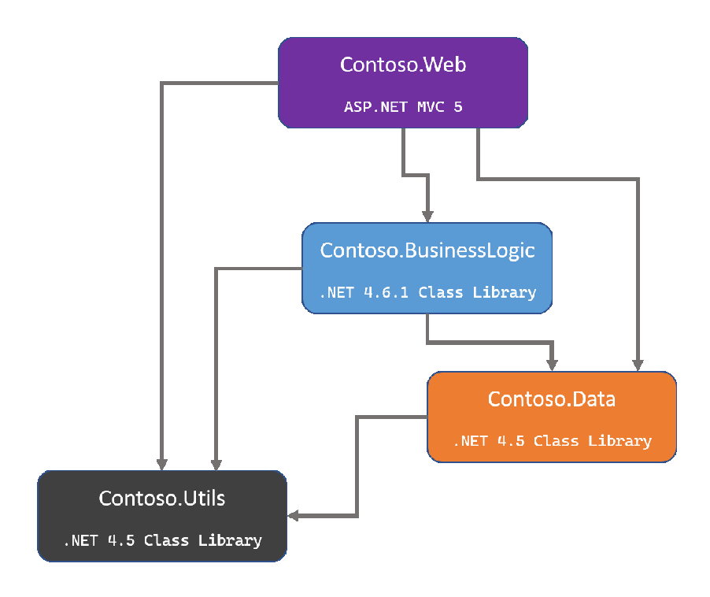
Choose a particular front-end app, an ASP.NET MVC 5 / Web API 2 project. Identify its dependencies in the solution, and map out their dependencies until you have a complete list. A diagram like the one
shown in Figure 3-1 may be useful when mapping out project dependencies. Visual Studio can produce a dependency diagram for your solution, depending on which edition you’re using. The .NET Portability Analyzer can also produce dependency diagrams.
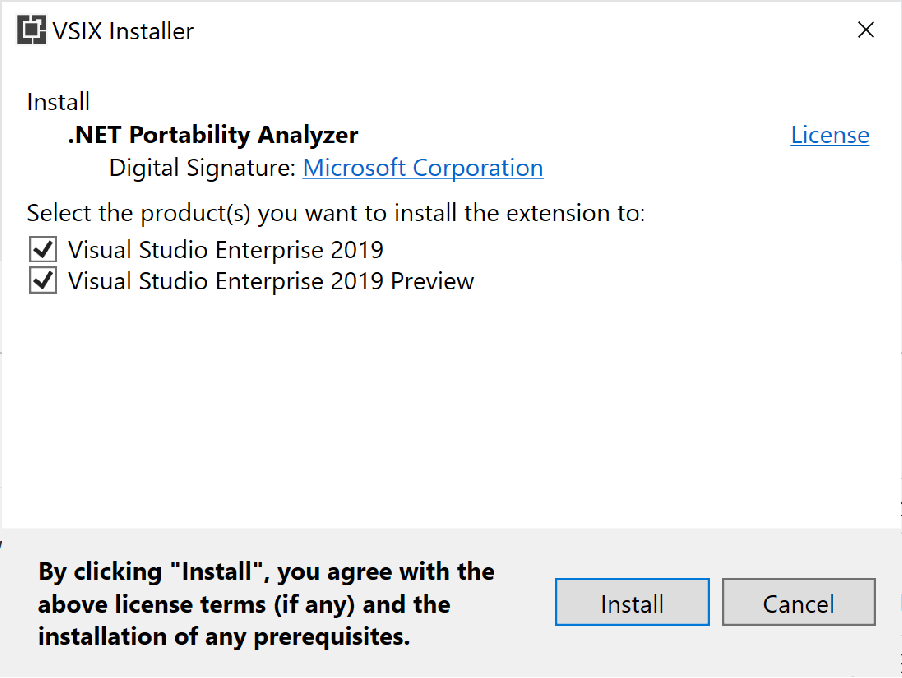
Figure 3-2. .NET Portability Analyzer installer. The extension currently supports Visual Studio 2017 and 2019. Visual Studio 2022 support is planned. Once installed, you configure it from the Analyze > Portability Analyzer Settings menu, as shown in
Figure 3-3.
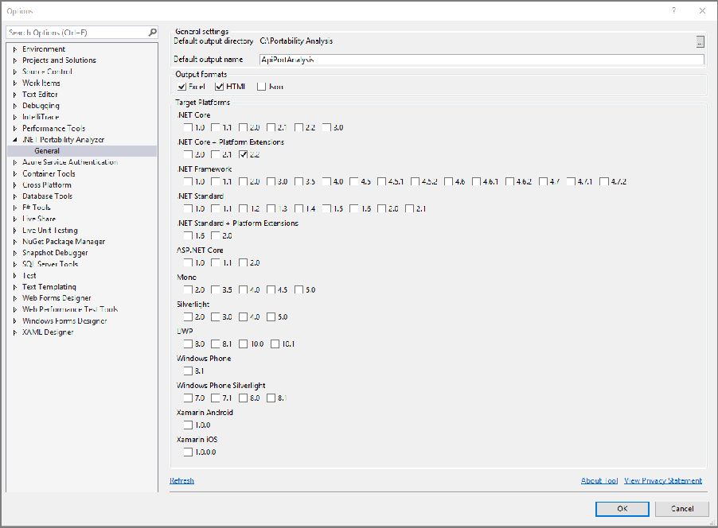
Figure 3-3. Configure the .NET Portability Analyzer. The analyzer produces a detailed report for each assembly. The report:
• Describes how compatible each project is with a given target framework, such as .NET 7 or
.NET Standard 2.0.
• Helps teams assess the effort required to port a particular project to a particular target framework.
The details of this analysis are covered in the next section. Once you’ve mapped out the projects and their relationships with one another, you’re ready to determine the order in which you’ll migrate the projects. Begin with projects that have no dependencies. Then, work your way up the tree to the projects that depend on these projects. In the example shown in Figure 3-1, you would start with the Contoso.Utils project, since it doesn’t depend on any other projects. Next, Contoso.Data since it only depends on “Utils”. Then migrate the “BusinessLogic” library, and finally the front-end ASP.NET “Web” project. Following this “bottom up” approach works well for relatively small and well-factored apps that can be migrated as a unit once all of their projects have migrated. Larger apps with more complexity, or more code that will take longer to migrate, may need to consider more incremental strategies.
Missing from the previous diagrams are unit test projects. Hopefully there are tests covering at least some of the existing behavior of the libraries being ported.
If you have unit tests, it’s best to convert those projects first. You’ll want to continue testing changes in the project you’re working on. Remember that porting to .NET Core is a significant change to your codebase.
MSTest, xUnit, and NUnit all work on .NET Core. If you don’t currently have tests for your app, consider building some characterization tests that verify the system’s current behavior. The benefit is that once the migration is complete, you can confirm the app’s behavior remains unchanged.
Some organizations will have many different apps to migrate, and migrating each one by hand may require too many resources to be tenable. In these situations, some degree of automation is recommended. The steps followed in this chapter can be automated. Structural changes, like project file differences and updates to common packages, can be applied by scripts. These scripts can be refined as they’re run iteratively on more projects. On each run, examine whatever manual steps are required for each project. Automate those manual steps, if possible. Using this approach, the organization should grow faster and better at porting their apps over time, with improved automation support each step of the way.
Watch an overview of how to employ this approach in this dotNetConf presentation by Lizzy Gallagher of Mastercard. The five phases employed in this presentation included:
• Migrate third-party NuGet dependencies
• Migrate apps to use new .csproj file format
• Update internal NuGet dependencies to .NET Standard
• Migrate apps to ASP.NET Core (targeting .NET Framework)
• Update all apps to target .NET 7
When automating a large suite of apps, it helps significantly if they follow consistent coding guidelines and project organization. Automation efforts rely on this consistency to be effective. In addition to parsing and migrating project files, common code patterns can be migrated automatically. Some code pattern examples include differences in how controller actions are declared or how they return results.
For example, a migration script could search files matching Controller.cs for lines of code matching one of these patterns:
return new HttpStatusCodeResult(200); // or return new HttpStatusCodeResult(HttpStatusCode.OK); |
|---|
In ASP.NET Core, either of the preceding lines of code can be replaced with:
return Ok(); |
|---|
The best approach to porting a large .NET Framework app to .NET Core is to:
1. Identify project dependencies.
2. Analyze what’s required to port each project.
3. Start from the bottom up.
You can use the .NET Portability Analyzer to determine how compatible existing libraries may be with target platforms. Automated tests will help ensure no breaking changes are introduced as the app is ported. These test projects should be among the first projects ported.
• Porting from .NET Framework to .NET Core
• The .NET Portability Analyzer
• 2 Years, 200 Apps: A .NET Core Migration at Scale (Video)
After identifying the sequence in which the app’s individual projects must be migrated, the next step is to understand each project’s dependencies and update them if necessary. For platform dependencies, the best way to start is to run the .NET Portability Analyzer on the assembly in question, and then look at the detailed results that are generated. You configure the tool to specify one or more target platforms, such as .NET 7 or .NET Standard 2.0. Results are provided with details for each platform targeted. Figure 3-4 shows an example of the tool’s output.
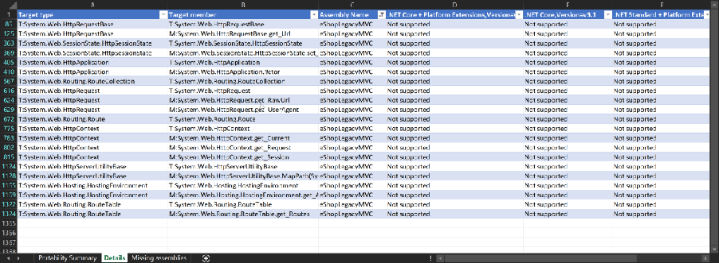
Figure 3-4. .NET Portability Analyzer report details.
Large apps typically involve multiple projects, and most projects other than the ASP.NET MVC web project are likely to be class libraries. Class libraries tend to be the easiest to port between .NET
platforms, especially compared to ASP.NET projects, which are among the most difficult (and typically need to be re-created).
Teams can consider the try-convert tool or the .NET Upgrade Assistant tool for migrating class libraries to .NET Core. These tools analyze a .NET Framework project file and attempt to migrate it to the .NET Core project file format, making any modifications it can safely perform in the process. The tools may require some manual assistance to work with ASP.NET projects, but can usually help speed up the process of migrating class libraries.
The try-convert and Upgrade Assistant tools are deployed as .NET Core command line tools. They only run on Windows, since they’re designed to work with .NET Framework apps. You can install tryconvert by running the following command from a command prompt: dotnet tool install -g try-convert
Once you’ve successfully installed the tool, you can run try-convert in the folder where the class library’s project file is located.
Install the .NET Upgrade Assistant with the following command (after installing try-convert): dotnet tool install -g upgrade-assistant
Run the tool with the command upgrade-assistant upgrade
Analyze your use of third-party NuGet packages and determine if any of them don’t yet support .NET Standard (or do support it but only with a new version). It can be helpful to update NuGet packages to use
.NET Core or .NET Standard. This information can be found on [nuget.org] or within Visual Studio for each package.
If support exists using the version of the package the app currently uses, great! If not, see if a more recent version of the package has the support and research what would be involved in upgrading. There may be breaking changes in the package, especially if the major version of the package changes between your currently used version and the one to which you’re upgrading.
In some cases, no version of a given package works with .NET Core. In that case, teams have a couple options. They can continue depending on the .NET Framework version, but this has limitations. The app may only run on Windows, and the team may want to run Portability Analyzer on the package’s binaries to see if there are any issues likely to be encountered. Certainly the team will want to test thoroughly, since if .NET Framework packages are used that reference APIs not available in .NET Core, a runtime exception will occur. The other option is to find a different package or, if the required package is open source, upgrade it to .NET Standard or .NET Core themselves.
The System.Web namespace and types don’t exist in .NET Core. When you’re analyzing dependencies and using tools like try-convert, you’ll find they don’t offer many suggestions for automatic migration of ASP.NET MVC projects and any code in them that references System.Web. For these projects, you’ll need to start with a new ASP.NET Core web project and manually migrate files to this project.
In general, it’s a good practice to minimize how much of an app’s business logic lives in its user interface layer. It’s also best to keep controllers and views small. Apps that have followed this guidance will be easier to port than those that have a significant amount of their logic in the ASP.NET web project. If you have an app you’re considering porting, but haven’t begun the process yet, keep this in mind as you maintain it. Any effort you put toward minimizing how much code is in the ASP.NET MVC or Web API project will likely result in less work when the time comes to port the app.
The next chapter digs into details of how to migrate from ASP.NET MVC and Web API projects to ASP.NET Core projects. The previous chapter called out the biggest differences between the apps. Once the basic project structure is in place, migrating individual controllers and views is usually straightforward, especially if they’re mainly focused on web responsibilities.
• .NET Upgrade Assistant tool
• try-convert tool
• apiport tool
Many teams have .NET Framework apps they plan to migrate to .NET Core/.NET 7, but the app is so large that the migration requires a significant amount of time to complete. The original app needs to live on while the migration is done piece by piece. There needs to be a way for the old and new versions of the app to work together side-by-side, or for the old version to be migrated in-place, at least some of the way, without breaking it. Teams can employ many different strategies to support these goals.
A good place to start if you plan to port a .NET Framework app to .NET Core is to refactor it to work better with .NET Core. This means updating individual class libraries to target .NET Standard and moving as much logic out of your ASP.NET MVC projects and into these class libraries. Any code you have in .NET Standard libraries is immediately usable from both .NET Framework to .NET Core apps, which is why this step is so valuable as part of a migration.
When refactoring, make sure you’re following good refactoring fundamentals. For example, create tests that verify what the system does before you start refactoring. Run these tests when you’re done to confirm you didn’t change the system’s behavior. You may need to add characterization tests to the system if you don’t already have a good suite of automated tests you can rely on.
If your .NET Framework apps include a lot of static assets, like scripts, CSS files, or images, you may be able to migrate these to a separate CDN. Then, update the existing app to reference the CDN links for these assets. When you port the app to .NET Core, these static files won’t be part of the migration, and you’ll just continue referencing them from the CDN in the ASP.NET Core app.
Large .NET Framework apps may already be comprised of separate front-end systems that can be migrated individually. Or they may be candidates for migration to a microservices architecture, with some pieces of existing ASP.NET MVC apps being pulled out into new ASP.NET Core microservice implementations. You can learn more about microservices in the associated ebook, .NET Microservices: Architecture for Containerized .NET Applications.
For example, the existing app might have a set of features it uses related to user sign-in and registration. These could be migrated to a separate microservice, which could be built and deployed using ASP.NET Core and then integrated into the legacy .NET Framework app. Next, the app might have a few pages dedicated to tracking the individual user’s shopping cart. These pages could also be pulled out into their own separate microservice and again integrated into the existing app. In this way, the original .NET Framework app continues running in production, but with more and more of its features coming from modernized .NET Core microservices.
Using a combination of host headers and redirects, an existing ASP.NET MVC app can be configured to run side by side with an ASP.NET Core app on the same IIS server. As pieces of functionality, such as individual controllers, are ported to ASP.NET Core, their routes and URLs are mapped within IIS to target the ASP.NET Core web site or sub-application (IIS virtual directories aren’t supported with ASP.NET Core apps). An ASP.NET Core app can be hosted as an IIS sub-application (sub-app). The sub-app’s path becomes part of the root app’s URL.
Large ASP.NET MVC apps can be gradually replaced with a new ASP.NET Core app by incrementally migrating pieces of functionality. One approach to this is called the strangler pattern, named for strangler vines that strangle and eventually tear down trees. This approach relies on first implementing a facade layer over top of the existing solution. This facade should be built using the new approach to the problem, or an off-the-shelf solution such as an API gateway.
Once the facade is in place, you can route part of it to a new ASP.NET Core app. As you port more of the original .NET Framework app to .NET Core, you continue to update the facade layer accordingly, sending more of the facade’s total functionality to the new system. Figure 3-5 shows the strangler pattern progression over time.
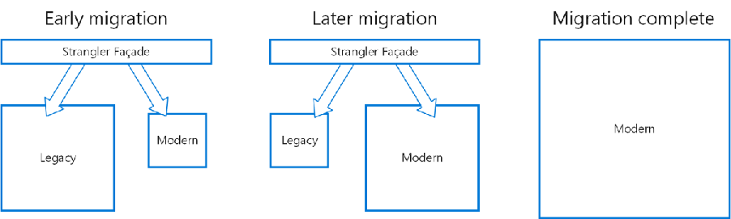
Figure 3-5. The Strangler pattern over time.
Eventually, the entire facade layer corresponds to the new, modern implementation. At this point, both the legacy system and the face layer can be retired. Microsoft has guidance on how to achieve incremental ASP.NET to ASP.NET Core migration using the YARP reverse proxy.
Multi-targeting is recommended for large apps that will be migrated over time and for teams applying the Strangler pattern approach. This approach can address BindingRedirect and package restoration challenges that surface from mixing PackageReference and packages.config restore styles. There are two options available for code that must run in both .NET Framework and .NET Core environments.
• Preprocessor directives (#if in C# or #If in Visual Basic) allow you to implement different functionality or use different dependencies when run in .NET Framework versus .NET Core.
• Project files can use conditional globbing patterns, such as *.core.cs, to include different sets of files based on which framework is being targeted.
Typically you only follow these recommendations for class libraries. These techniques allow a single common codebase to be maintained while new functionality is added and features of the app are incrementally ported to use .NET Core.
Frequently, large ASP.NET MVC and Web API apps won’t be ported to ASP.NET Core all at once, but will migrate incrementally over time. This section offers several strategies for performing this incremental migration. Choose the one(s) that will work best for your organization and app.
• .NET Microservices: Architecture for Containerized .NET Applications
• eShopOnContainers Reference Microservices Application
• Host ASP.NET Core on Windows with IIS
• Strangler pattern
• Incremental ASP.NET to ASP.NET Core Migration
CHAPTER |
|---|
4
Example migration of eShop to ASP.NET Core
In this chapter, you’ll see how to migrate a .NET Framework app to .NET Core. The chapter examines a sample online store app written for ASP.NET MVC 5. The app will use many of the concepts and tools described earlier in this book. You’ll find the starting point app in the eShopModernizing GitHub repository. There are several different starting point apps. This chapter focuses on the eShopLegacyMVCSolution.
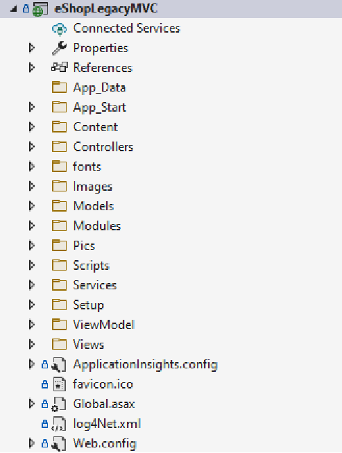
Figure 4-1. The eShopModernizing MVC sample project structure.
This chapter demonstrates how to perform many of the upgrade steps by hand. Alternatively, you can use the .NET Upgrade Assistant tool to perform many of the initial steps, like converting the project file, changing the target framework, and updating NuGet packages.
The first step in preparing to migrate is to run the ApiPort tool. The tool identifies how many .NET Framework APIs the app calls and how many of these have .NET Standard or .NET Core equivalents. Focus primarily on your own app’s logic, not third-party dependencies, and pay attention to System.Web dependencies that will need to be ported. The ApiPort tool was introduced in the last chapter on understanding and updating dependencies. Note that currently it requires Visual Studio 2019; Visual Studio 2022 support is planned.
After installing and configuring the ApiPort tool, run the analysis from within Visual Studio, as shown in Figure 4-2.
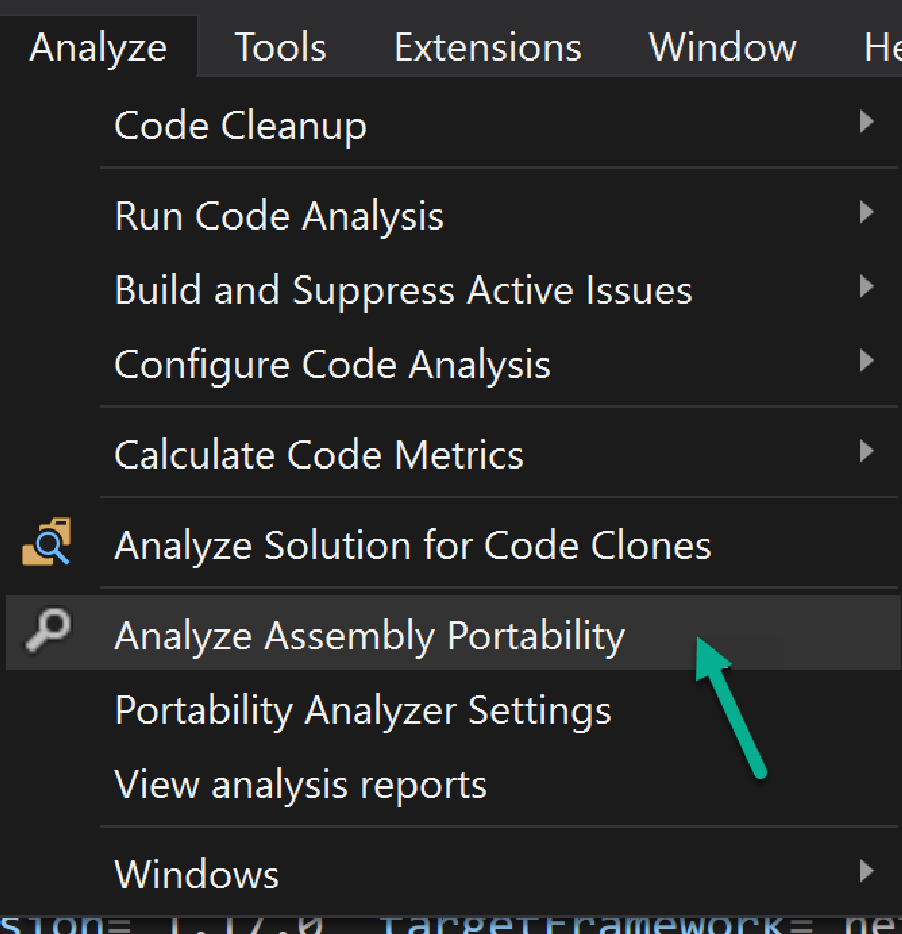
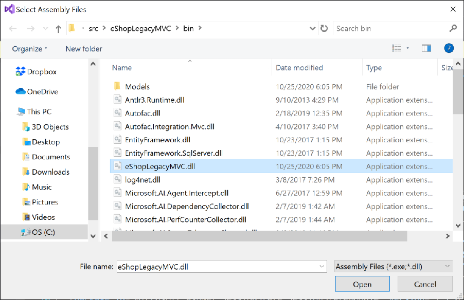
Figure 4-3. Choose the project’s web assembly.
If your solution includes several projects, you can choose all of them. The eShop sample includes just a single MVC project.
Once the report is generated, open the file and review the results. The summary provides a high-level view of what percentage of .NET Framework calls your app is making have compatible versions. Figure 4-4 shows the summary for the eShop MVC project.
Figure 4-4. ApiPort summary.
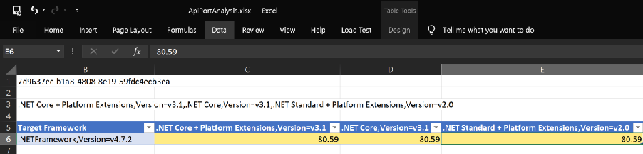
For this app, about 80 percent of the .NET Framework calls are compatible. 20 percent of the calls need to be addressed during the porting process. Viewing the details reveals that all of the incompatible calls are part of System.Web, which is an expected incompatibility. The dependencies on System.Web calls will be addressed when the app’s controllers and related classes are migrated in a later step. Figure 4-5 lists some of the specific types found by the tool:
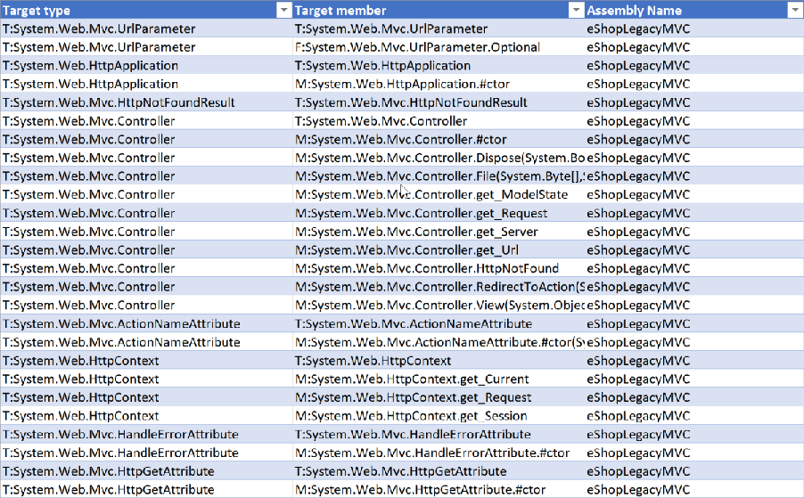
Figure 4-5. ApiPort incompatible type details.
Most of the incompatible types refer to Controller and various related attributes that have equivalents in ASP.NET Core.
Next, migrate from the older .csproj file structure to the newer, simpler structure introduced with .NET Core. In doing so, you’ll also migrate from using a packages.config file for NuGet references to using
The original project’s eShopLegacyMVC.csproj file is 418 lines long. A sample of the project file is
shown in Figure 4-6. To offer a sense of its overall size and complexity, the right side of the image contains a miniature view of the entire file.
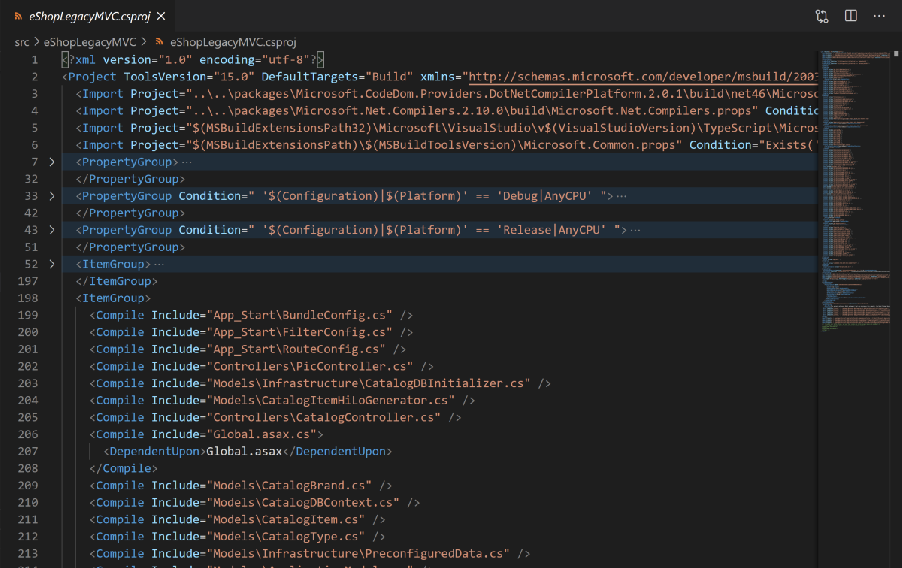
Figure 4-6. The eShopLegacyMVC.csproj file structure.
A common way to create a new project file for an existing ASP.NET project is to create a new ASP.NET Core app using dotnet new or File > New > Project in Visual Studio. Then files can be copied from the old project to the new one to complete the migration.
In addition to the C# project file, NuGet dependencies are stored in a separate 45-line packages.config file, as shown in Figure 4-7.
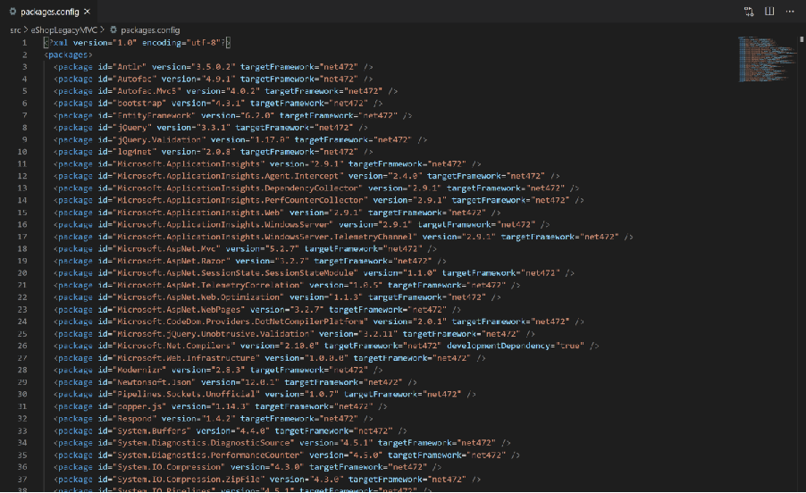
Figure 4-7. The packages.config file.
You can migrate packages.config in class library projects using Visual Studio. This functionality doesn’t work with ASP.NET projects, however. Learn more about migrating packages.config to
Add a new ASP.NET Core project to the existing app’s solution to make moving files easier, as most of the work can be done from within Visual Studio’s Solution Explorer. In Visual Studio, right-click on your app’s solution and choose Add New Project. Choose ASP.NET Core web application, and give the new project a name as shown in Figure 4-8.
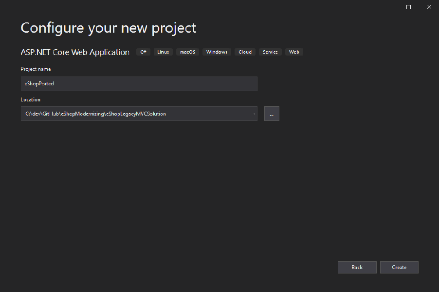
Figure 4-8. Add new ASP.NET Core web application.
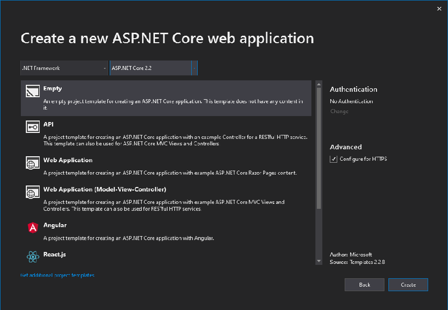
Figure 4-9. Choose an Empty project template targeting .NET Framework with ASP.NET Core 2.2.
Since the built-in migration tool for migrating packages.config to
iwr https://gist.githubusercontent.com/aienabled/0bce5e4b17118122f2772e7c9218bf9c/raw/7789 53f89882877a7124894b47dccfb1ba3e80a0/Convert-ToPackageReference.ps1 -OutFile ConvertToPackageReference.ps1 iwr
https://gist.githubusercontent.com/aienabled/0bce5e4b17118122f2772e7c9218bf9c/raw/7789 53f89882877a7124894b47dccfb1ba3e80a0/Convert-ToPackageReference.xsl -OutFile ConvertToPackageReference.xsl
./Convert-ToPackageReference.ps1 | Out-Null
The first two commands download files so that they exist locally. The last line runs the script. After running it, try to build the new project. You’ll most likely get some errors. To resolve them, you’ll want to eliminate some references (like most of the Microsoft.AspNet and System packages), and you may need to remove some xmlns attributes.
In most ASP.NET MVC apps, many client-side dependencies like Bootstrap and jQuery were deployed using NuGet packages. In ASP.NET Core, NuGet packages are only used for server-side functionality. Client files should be managed through other means. Review the list of
• Bootstrap
• jQuery
• jQuery.Validation
• Modernizr
• popper.js
• Respond
The static client files installed by NuGet for these packages will be copied over to the new project’s
wwwroot folder and hosted from there. It’s worth considering whether these files are still needed by the app, and whether it makes sense to continue hosting them or to use a content delivery network (CDN) instead. These library versions can be managed at build time using tools like LibMan or npm.
Figure 4-10 shows the full eShopPorted.csproj file after migrating package references using the conversion tool shown and removing unnecessary packages.
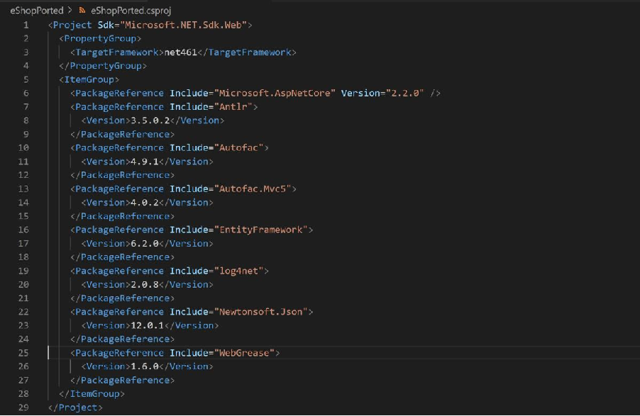
Figure 4-10. Package references in the eShopPorted.csproj file.
Any static files the app uses, including third-party scripts and frameworks but also custom images and stylesheets, must be copied from the old project to the new one. In ASP.NET MVC apps, files were typically accessed based on their location within the project folder. In ASP.NET Core apps, these static files will be accessed based on their location within the wwwroot folder. For the eShop project, there are static files in the following folders:
• Content
• fonts
• Images
• Pics
• Scripts
The Empty project template used in the previous step doesn’t include this folder by default, or the middleware needed for it to work. You’ll need to add them.
Add a wwwroot folder to the root of the project. Add version 2.2.0 of the Microsoft.AspNetCore.StaticFiles NuGet package. In Startup.cs, add a call to app.UseStaticFiles() in the Configure method:
public void Configure(IApplicationBuilder app, IHostingEnvironment env) { if (env.IsDevelopment()) { app.UseDeveloperExceptionPage(); } app.UseStaticFiles(); // ... } |
|---|
Copy the Content folder from the ASP.NET MVC app to the new project’s wwwroot folder. Run the app and navigate to its /Content/base.css folder to verify that the static file is served correctly from its expected path. Continue copying the rest of the folders containing static files to the new project. You’ll also want to copy the favicon.ico file from the project’s root to the wwwroot folder.
Figure 4-11 shows the results after these files and their folders have all been copied.
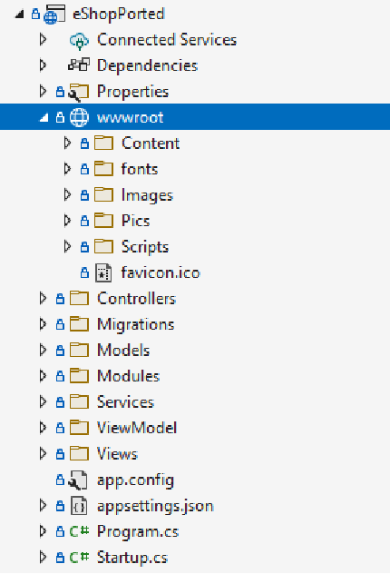
Figure 4-11. Static folders copied over to wwwroot folder.
Next, copy over the C# files used by the app, including standard MVC folders and their contents like Controllers, Models, ViewModel, and Services. There will most likely be some changes needed in these files. It’s best to copy one folder (or subfolder) at a time and compile to see what errors need to be addressed as you go.
For the eShop sample, the first folder I choose to migrate is the Models folder, which includes C# entities and Entity Framework classes. This folder’s classes are used by most of the others, so they won’t work until these classes have been copied. After copying the folder and building, the compiler revealed errors related to missing namespace System.Web.Hosting, related access to HostingEnvironment, and a reference to ConfigurationManager.AppSettings. The solution to these issues will be to pass in the necessary path data; for now the breaking lines are commented out and a TODO: comment is added to each one to track it. After changing five lines, the Task List shows five items and the project builds.
Next, the ViewModel folder, with its one class, is copied over. It’s an easy one, and builds immediately. The Services folder is copied over. This folder’s classes depend on Entity Framework classes from the Models folder, which is why it needed to be copied after that folder. Fortunately, it too builds without errors.
That leaves the Controllers folder and its two Controller classes. After copying the folder to the new project and building, there are seven build errors. Four of them are related to ViewBag access and report an error of:
Missing compiler required member 'Microsoft.CSharp.RuntimeBinder.CSharpArgumentInfo.Create' To resolve this error, add a NuGet package reference to C#:
The remaining three errors specify types that are defined in an assembly that isn’t referenced. Specifically these types:
• HttpServerUtilityBase
• RouteValueDictionary
• HttpRequestBase
Let’s look at each error one by one. The first error occurs while trying to reference the Server property of Controller, which no longer exists. The goal of the operation is to get the path to an image file in the app:
if (item != null) { var webRoot = Server.MapPath("~/Pics"); // compiler error on this line var path = Path.Combine(webRoot, item.PictureFileName); string imageFileExtension = Path.GetExtension(item.PictureFileName); string mimetype = GetImageMimeTypeFromImageFileExtension(imageFileExtension); var buffer = System.IO.File.ReadAllBytes(path); return File(buffer, mimetype); } |
|---|
There are two possible solutions to this problem. The first is to keep the functionality as it is. In this case, rather than using Server.MapPath, a fixed path referencing the image files’ location in wwwroot should be used. Alternately, since the only purpose of this action method is to return a static image file, the references to this action in view files can be updated to reference the static files directly, which improves runtime performance. Since no processing is being done as part of this action, there’s no reason not to just serve the files directly. If it’s not tenable to update all references to this action, the action could be rewritten to produce a redirect to the static file’s location.
The next two errors both occur in the same private method in the same line of code:
private void AddUriPlaceHolder(CatalogItem item) { item.PictureUri = this.Url.RouteUrl(PicController.GetPicRouteName, new { catalogItemId = item.Id }, this.Request.Url.Scheme); } |
|---|
Both this.Url and this.Request cause compiler errors. Looking at how this code is used, its purpose is to build a link to the PicController action that renders image files. The same one we just discovered could probably be replaced with direct links to the static files located in wwwroot. For now, it’s worth commenting out this code and adding a TODO: comment to reference the pics another way.
It’s worth noting that the base Controller class, used by the CatalogController class in which this code appears, is still referring to System.Web.Mvc.Controller. There will undoubtedly be more errors to fix once we update this to use ASP.NET Core. First, remove the using System.Web.Mvc; line from the list of using statements in CatalogController. Next, add the NuGet package Microsoft.AspNetCore.Mvc. Finally, add a using Microsoft.AspNetCore.Mvc; statement, and build the app again.
This time, there are 16 errors:
• Include is not a valid named attribute argument (2)
• HttpStatusCodeResult not found (3)
• HttpNotFound does not exist (3)
• SelectList not found (8)
Once more, let’s review these errors one by one. First, SelectList can be fixed by adding using Microsoft.AspNetCore.Mvc.Rendering;, which eliminates half of the errors.
All references to return HttpNotFound(); should be replaced with return NotFound();. All references to return new HttpStatusCodeResult(HttpStatusCode.BadRequest); should be replaced with return BadRequest();. That just leaves the use of Include with a [Bind] attribute on a couple of action methods that look like this:
[HttpPost] [ValidateAntiForgeryToken] public ActionResult Create([Bind(Include = "Id,Name,Description,Price,PictureFileName,CatalogTypeId,CatalogBrandId,AvailableStock,Rest ockThreshold,MaxStockThreshold,OnReorder")] CatalogItem catalogItem) { |
|---|
The preceding code restricts model binding to the properties listed in the Include string. In ASP.NET Core MVC, the [Bind] attribute still exists, but no longer needs the Include = argument. Pass the list of properties directly to the [Bind] attribute:
[HttpPost] [ValidateAntiForgeryToken] public ActionResult Create([Bind("Id,Name,Description,Price,PictureFileName,CatalogTypeId,CatalogBrandId,Availa bleStock,RestockThreshold,MaxStockThreshold,OnReorder")] CatalogItem catalogItem) { |
|---|
With these changes, the project compiles once more. It’s generally a better practice to use separate model types for controller inputs, rather than using model binding directly to your domain model or data model types.
The two biggest ASP.NET Core MVC features related to views are Razor Pages and Tag Helpers. For the initial migration, we won’t use either feature. You should, however, keep the features in mind if you continue supporting the app once it’s been migrated. The next step is to copy the Views folder from the original project into the new one. After building, there are nine errors:
• HttpContext does not exist (2)
• Scripts does not exist (5)
• Styles does not exist (1)
• HtmlString could not be found(1)
Investigating these errors finds that most of them are in the main *_Layout.cshtml, with several related to rendering script and style tags, or displaying when the server hosting the app was last restarted. The following code listing shows problem areas in the _Layout.cshtml* file:
// other lines omitted; only errors shown @Styles.Render("~/Content/css") @Scripts.Render("~/bundles/modernizr") @{ var sessionInfo = new HtmlString($"{HttpContext.Current.Session["MachineName"]}, {HttpContext.Current.Session["SessionStartTime"]}");} @Scripts.Render("~/bundles/jquery") @Scripts.Render("~/bundles/bootstrap") |
|---|
The reference to Modernizr can be removed. The references to Bootstrap and jQuery can be replaced with CDN links to the appropriate version.
Replace @Styles.Render line with:
Replace the last two Scripts.Render lines with:
|
|---|
Finally, after the Bootstrap , add additional elements for local styles your app uses. For eShop, the result is shown here:
|
|---|
To determine the order in which the elements should appear, look at your original app’s rendered HTML. Alternatively, review BundleConfig.cs, which for the eShop sample includes this code indicating the appropriate sequence:
bundles.Add(new StyleBundle("~/Content/css").Include( "~/Content/bootstrap.css", "~/Content/custom.css",
"~/Content/base.css", "~/Content/site.css"));
Building again reveals one more error loading jQuery Validation on the Create and Edit views. Replace it with this script:
The last thing to fix in the views is the reference to Session to display how long the app has been running, and on which machine. We can display this data directly in the site’s *_Layout.cshtml* by using System.Environment.MachineName and System.Diagnostics.Process.GetCurrentProcess().StartTime:
|
|---|
At this point, the app once more builds successfully. However, trying to run it just yields Hello World! because the Empty ASP.NET Core template is only configured to display that in response to any request. In the next section, I complete the migration by configuring the app to use ASP.NET Core MVC, including dependency injection and configuration. Once that’s in place, the app should run. Then it will be time to fix the TODO: tasks that were created earlier.
The last migration step is to take the app startup tasks from Global.asax, and the classes it calls, and migrate these to their ASP.NET Core equivalents. These tasks include configuration of MVC itself, setting up dependency injection, and working with the new configuration system. In ASP.NET Core, these tasks are handled in the Startup.cs file.
The original ASP.NET MVC app has the following code in its Application_Start in Global.asax, which runs when the app starts up:
protected void Application_Start() { container = RegisterContainer(); AreaRegistration.RegisterAllAreas(); FilterConfig.RegisterGlobalFilters(GlobalFilters.Filters); RouteConfig.RegisterRoutes(RouteTable.Routes); BundleConfig.RegisterBundles(BundleTable.Bundles); ConfigDataBase(); } |
|---|
Looking at these lines one by one, the RegisterContainer method sets up dependency injection, which will be ported below. The next three lines configure different parts of MVC: areas, filters, and routes. Bundles are replaced by static files in the ported app. The last line sets up data access for the app, which will be shown in a later section.
Since this app isn’t actually using areas, there’s nothing that needs to be done to migrate the area registration call. If your app does need to migrate areas, the docs specify how to configure areas in ASP.NET Core.
The call to register global filters invokes a helper on the FilterConfig class in the app’s App_Start folder:
public static void RegisterGlobalFilters(GlobalFilterCollection filters) { filters.Add(new HandleErrorAttribute()); } |
|---|
The only attribute added to the app is the ASP.NET MVC filter, HandleErrorAttribute. This filter ensures that when an exception occurs as part of a request, a default action and view are displayed, rather than the exception details. In ASP.NET Core, this same functionality is performed by the UseExceptionHandler middleware. The detailed error messages aren’t enabled by default. They must be configured using the UseDeveloperExceptionPage middleware. To configure this behavior to match the original app, the following code must be added to the start of the Configure method in Startup.cs:
public void Configure(IApplicationBuilder app, IWebHostEnvironment env) { if (env.IsDevelopment()) { app.UseDeveloperExceptionPage(); } else {app.UseExceptionHandler("/Error"); } // ... } |
|---|
This takes care of the only filter used by the eShop app, and in this case it was done by using built-in middleware. If you have global filters that must be configured in your app, this is done when MVC is added in Program.cs when you configure services, which is shown later in this chapter.
The last piece of MVC-related logic that needs to be migrated are the app’s default routes. The call to RouteConfig.RegisterRoutes(RouteTable.Routes) passes the MVC route table to the RegisterRoutes helper method, where the following code is executed when the app starts up:
public static void RegisterRoutes(RouteCollection routes) {
routes.MapMvcAttributeRoutes(); routes.IgnoreRoute("{resource}.axd/{*pathInfo}");
routes.MapRoute( name: "Default", url: "{controller}/{action}/{id}", defaults: new { controller = "Catalog", action = "Index", id =
UrlParameter.Optional }
); }
Taking this code line-by-line, the first line sets up support for attribute routes. This is built into ASP.NET Core, so it’s unnecessary to configure it separately. Likewise, {resource}.axd files aren’t used with ASP.NET Core, so there’s no need to ignore such routes. The MapRoute method configures the default for MVC, which uses the typical {controller}/{action}/{id} route template. It also specifies the defaults for this template, such that the CatalogController is the default controller used and the Index method is the default action. Larger apps will frequently include more calls to MapRoute to set up additional routes.
ASP.NET Core MVC supports conventional routing and attribute routing. Conventional routing is analogous to how the route table is configured in the RegisterRoutes method listed previously. To set up conventional routing with a default route like the one used in the eShop app, add the following code to the bottom of the Configure method in Startup.cs:
app.UseMvc(routes => { routes.MapRoute("default", "{controller=Catalog}/{action=Index}/{id?}"); }); |
|---|
NoteWith ASP.NET Core 3.0 and later, this is changed to use endpoints. For the initial port to ASP.NET Core 2.2, this is the proper syntax for mapping conventional routes. |
|---|
With these changes in place, the Configure method is almost done. The original template’s app.Run method that prints Hello World! should be deleted. At this point, the method is as shown here:
public void Configure(IApplicationBuilder app, IHostingEnvironment env) { if (env.IsDevelopment()) { app.UseDeveloperExceptionPage(); } else {app.UseExceptionHandler("/Home/Error"); } app.UseStaticFiles(); app.UseMvc(routes => { routes.MapRoute("default", "{controller=Catalog}/{action=Index}/{id?}"); }); } |
|---|
Now it’s time to configure MVC services, followed by the rest of the app’s support for dependency injection (DI). So far, the eShopPorted project’s Program.cs file hasn’t added any service configuration. Now it’s time to start adding necessary services.
First, to get ASP.NET Core MVC to work properly, it needs to be added:
builder.Services.AddMvc(); |
|---|
The preceding code is the minimal configuration required to get MVC features working. There are many additional features that can be configured from this call (some of which are detailed later in this chapter), but for now this will suffice to build the app. Running it now routes the default request properly, but since we’ve not yet configured DI, an error occurs while activating CatalogController, because no implementation of type ICatalogService has been provided yet. We’ll return to configure MVC further in a moment. For now, let’s migrate the app’s dependency injection.
Migrate dependency injection configuration The original app’s Global.asax file defines the following method, called when the app starts up:
protected IContainer RegisterContainer() { var builder = new ContainerBuilder(); builder.RegisterControllers(typeof(MvcApplication).Assembly); var mockData = bool.Parse(ConfigurationManager.AppSettings["UseMockData"]); builder.RegisterModule(new ApplicationModule(mockData)); var container = builder.Build(); DependencyResolver.SetResolver(new AutofacDependencyResolver(container)); return container; } |
|---|
This code configures an Autofac container, reads a config setting to determine whether real or mock data should be used, and passes this setting into an Autofac module (found in the app’s /Modules directory). Fortunately, Autofac supports .NET Core, so the module can be migrated directly. Copy the folder into the new project and updates the class’s namespace and it should compile.
ASP.NET Core has built-in support for dependency injection, but you can wire up a third-party container such as Autofac easily if necessary. In this case, since the app is already configured to use Autofac, the simplest solution is to maintain its usage. In Program.cs, simply configure the builder to use the AutofacServiceProviderFactory as shown:
// using Autofac.Extensions.DependencyInjection builder.Host.UseServiceProviderFactory(new AutofacServiceProviderFactory()); // note: the factory calls builder.Populate so we don't need to here bool useMockData = true; // TODO: read from config builder.Host.ConfigureContainer builder.RegisterModule(new ApplicationModule(useMockData))); |
|---|
For now, the setting for useMockData is set to true. This setting will be read from configuration in a moment. At this point, the app compiles and should load successfully when run, as shown in Figure 4-
12.
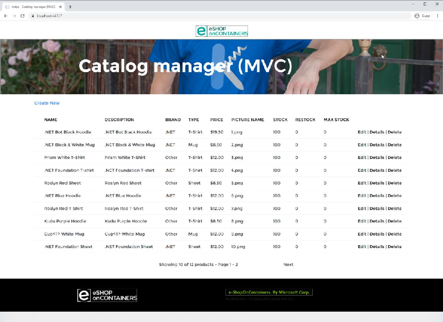
Figure 4-12. Ported eShop app running locally with mock data.
ASP.NET Core uses a new configuration system, which by default uses an appsettings.json file. By using CreateDefaultBuilder in Program.cs, the default configuration is already set up in the app. To access configuration, classes just need to request it in their constructor. In Program.cs, configuration is accessible from builder.Configuration.
The original app referenced its settings using ConfigurationManager.AppSettings. A quick search for all references of this term yields the set of settings the new app needs. There are only two:
• UseMockData
• UseCustomizationData
If your app has more complex configuration, especially if it’s using custom configuration sections, you’ll probably want to create and bind objects to different parts of your app’s configuration. These types can then be accessed using the options pattern. However, as noted in the referenced doc, this pattern shouldn’t be used in Program.cs (or Startup.ConfigureServices). Instead the ported app will reference the UseMockData configuration value directly.
First, modify the ported app’s appsettings.json file and add the two settings in the root: {
"Logging": {
"LogLevel": {
"Default": "Warning" }
}, "AllowedHosts": "*", "UseMockData": "true", "UseCustomizationData" : "true"
}
Now, modify Program.cs to access the UseMockData setting from the builder.Configuration property (where previously we set the value to true):
bool useMockData = builder.Configuration.GetValue |
|---|
At this point, the setting is pulled from configuration. The other setting, UseCustomizationData, is used by the CatalogDBInitializer class. When you first ported this class, you commented out the access to ConfigurationManager.AppSettings["UseCustomizationData"]. Now it’s time to modify it to use ASP.NET Core configuration. Modify the constructor of CatalogDBInitializer as follows:
// add using Microsoft.Extensions.Configuration public CatalogDBInitializer(CatalogItemHiLoGenerator indexGenerator, IConfiguration configuration) { this.indexGenerator = indexGenerator; useCustomizationData = configuration.GetValue } |
|---|
All access to configuration within the web app should be modified in this manner to use the new IConfiguration type. Dependencies that require access to .NET Framework configuration can include such settings in an app.config file added to the web project. The dependent projects can work with ConfigurationManager to access settings, and shouldn’t require any changes if they already use this approach. However, since ASP.NET Core apps run as their own executable, they don’t reference web.config but rather app.config. By migrating settings from the legacy app’s web.config file to a new app.config file in the ASP.NET Core app, components that use ConfigurationManager to access their settings will continue to function properly. The app’s migration is nearly complete. The only remaining task is data access configuration.
ASP.NET Core apps running on .NET Framework can continue to use Entity Framework (EF). If performing an incremental migration, getting the app working with EF 6 before trying to port its data access to use EF Core may be worthwhile. In this way, any problems with the app’s migration can be identified and addressed before another block of migration effort is begun.
As it happens, configuring EF 6 in the eShop sample migration doesn’t require any special work, since this work was performed in the Autofac ApplicationModule. The only problem is that currently the CatalogDBContext class tries to read its connection string from web.config. To address this, the connection details need to be added to appsettings.json. Then the connection string must be passed into CatalogDBContext when it’s created.
Update the appsettings.json to include the connection string. The full file is listed here:
{ "ConnectionStrings": { "DefaultConnection": "Server=(localdb)\\mssqllocaldb;Database=eShopPorted;Trusted_Connection=True;MultipleActive ResultSets=true" }, "Logging": { "LogLevel": { "Default": "Warning" } }, "AllowedHosts": "*", "UseMockData": "false", "UseCustomizationData": "true" } |
|---|
The connection string must be passed into the constructor when the DbContext is created. Since the instances are created by Autofac, the change needs to be made in ApplicationModule. Modify the module to take in a connectionString in its constructor and assign it to a field. Then modify the registration for CatalogDBContext to add connection string as a parameter:
builder.RegisterType .WithParameter("connectionString", _connectionString) .InstancePerLifetimeScope(); |
|---|
The parameter must also be added to a new constructor overload in CatalogDBContext itself:
public CatalogDBContext(string connectionString) : base(connectionString) { } |
|---|
Finally, Program.cs must read the connection string from Configuration and pass it into the ApplicationModule when it instantiates it:
bool useMockData = Configuration.GetValue |
|---|
With this code in place, the app runs as it did before, connecting to a SQL Server database when UseMockData is false.
The app can be deployed and run in production at this point, converted to ASP.NET Core but still running on .NET Framework and EF 6. If desired, the app can be migrated to run on .NET Core and Entity Framework Core, which will bring additional advantages described in earlier chapters. Specific to Entity Framework, this documentation compares EF Core and EF 6 and includes a grid showing which library supports each of dozens of individual features.
Assuming a decision is made to migrate to EF Core, the steps can be fairly straightforward, especially if the original app used a code-based model approach. When preparing to port from EF 6 to EF Core, review the availability of features in the destination version of EF Core you’ll be using. Review the documentation on porting from and EDMX-based model versus porting from a code-based model.
To upgrade to EF Core 2.2, the basic steps involved are to add the appropriate NuGet package(s) and update namespaces. Then adjust how the connection string is passed to the DbContext type and how they’re wired up for dependency injection.
EF Core is added as a package reference to the project:
The reference to EF 6 is removed:
The compiler will report errors in CatalogDBContext and CatalogDBInitializer. CatalogDbContext needs to have the old namespaces removed and replaced with Microsoft.EntityFrameworkCore. Its constructors can be removed. DbModelBuilder should be replaced with ModelBuilder. The helper methods for configuring types are moved to separate classes implementing IEntityTypeConfiguration
protected override void OnModelCreating(ModelBuilder builder) { builder.ApplyConfigurationsFromAssembly(Assembly.GetExecutingAssembly()); base.OnModelCreating(builder); } |
|---|
Other changes involved include:
• HasDatabaseGeneratedOption(DatabaseGeneratedOption.None) replaced with ValueGeneratedNever()
• HasRequired
• Installed Microsoft.EntityFrameworkCore.Relational package
• Add a constructor to CatalogDBContext taking DbContextOptions and passing it to the base constructor
An example configuration class for CatalogType is shown here:
using Microsoft.EntityFrameworkCore; using Microsoft.EntityFrameworkCore.Metadata.Builders;
namespace eShopPorted.Models.Config {
public class CatalogTypeConfig : IEntityTypeConfiguration
public void Configure(EntityTypeBuilder
builder.ToTable(nameof(CatalogType)); builder.HasKey(ci => ci.Id); builder.Property(ci => ci.Id)
.IsRequired(); builder.Property(cb => cb.Type)
.IsRequired()
.HasMaxLength(100);
} }
}
The CatalogDBInitializer and its base class, CreateDatabaseIfNotExists
dbContext.Database.EnsureDeleted(); dbContext.Database.EnsureCreated(); |
|---|
Seeding data in EF Core can be done with manual scripts, or as part of the type configuration. Along with other entity properties, seed data can be configured in IEntityTypeConfiguration classes by using builder.HasData(). The original app loaded seed data from CSV files in the Setup directory. Given that there are only a handful of items, these data records can instead be added as part of the entity configuration. This approach works well for lookup data in tables that change infrequently. Adding the following to CatalogTypeConfig’s Configure method ensures the associated rows are present when the database is created:
builder.HasData(
); |
|---|
The initial app includes a PreconfiguredData class, which includes data for CatalogBrand and CatalogType, so using this method the HasData call reduces to:
builder.HasData( PreconfiguredData.GetPreconfiguredCatalogBrands() ); |
|---|
The CatalogItem data can also be pulled from PreconfiguredData, and assuming the associated images are kept in source control, that is the last table needed for the app to function. The CatalogDBInitializer class can be removed, along with any references to it. The CatalogItemHiLoGenerator class and the SQL files in the Infrastructure directory are also removed, along with any references to them (in CatalogService, ApplicationModule).
With the elimination of the special key generator classes for CatalogItem, this code now is removed from CatalogItemConfig:
builder.Property(ci => ci.Id) .ValueGeneratedNever() .IsRequired(); |
|---|
With these modifications, the ASP.NET Core app builds, but it doesn’t yet work with EF Core, which must still be configured for dependency injection. With EF Core, the simplest way to configure it is in Program.cs:
builder.Services.AddMvc(); bool useMockData = builder.Configuration.GetValue
string connectionString = builder.Configuration.GetConnectionString("DefaultConnection");
builder.Services.AddDbContext
options.UseSqlServer(connectionString) );
}
The final version of Autofac’s ApplicationModule only configures one type, depending on whether the app is configured to use mock data:
public class ApplicationModule : Module { private bool _useMockData; public ApplicationModule(bool useMockData) { _useMockData = useMockData; } protected override void Load(ContainerBuilder builder) { if (_useMockData) { builder.RegisterType .As .SingleInstance(); } else {builder.RegisterType .As .InstancePerLifetimeScope(); } } } |
|---|
The ported app runs, but doesn’t display any data if configured to use non-mock data. The seed data added through HasData is only inserted when migrations are applied. The source app didn’t use migrations, and if it had, they wouldn’t migrate as-is. The best approach is to start with a new migration script. To do this, add a package reference for Microsoft.EntityFrameworkCore.Design and open a terminal window in the project root. Then run:
dotnet ef migrations add Initial Drop the existing eShopPorted database if it exists, then run: dotnet ef database update This creates and seeds the database. It’s now ready to run, with a few small updates left to address.
Running the ported app at this point reveals that no pictures are shown on the page. This is because the PictureUri property of CatalogItem is never set. Looking at the list of TODO items we created
using Visual Studio’s Task List, the only one that remains is in CatalogController, with a note to “Reference pic from wwwroot.” The code in question is:
private void AddUriPlaceHolder(CatalogItem item) { //TODO: Reference pic from wwwroot //item.PictureUri = this.Url.RouteUrl(PicController.GetPicRouteName, new { catalogItemId = item.Id }, this.Request.Url.Scheme); } |
|---|
The simplest fix is to reference the public image files in the site’s public wwwroot/Pics directory. This task can be accomplished by replacing the method with the following code:
private void AddUriPlaceHolder(CatalogItem item) { item.PictureUri = $"/Pics/{item.Id}.png"; } |
|---|
With this change, running the app reveals the images work as before.
The eShopLegacyMVC app is fairly simple, so there isn’t much to configure in terms of default MVC behavior. However, if you do need to configure additional MVC components, such as CORS, filters, and route constraints, you generally provide this information in Program.cs, where UseMvc is called. For example, the following code listing configures CORS and sets up a global action filter:
builder.Services.AddCors(options => { options.AddPolicy(MyAllowSpecificOrigins, builder => builder.WithOrigins("http://example.com", "http://www.contoso.com") .AllowAnyHeader() .AllowAnyMethod()); }); builder.Services.AddMvc(options => { options.Filters.Add(new SampleGlobalActionFilter()); }).SetCompatibilityVersion(CompatibilityVersion.Version_2_2); |
|---|
Note To finish configuring CORS, you must also call app.UseCors() after building the application. |
|---|
Other advanced scenarios, like adding custom model binders, formatters, and more are covered in the detailed ASP.NET Core docs. Generally these can be applied on an individual controller or action basis, or globally using the same options approach shown in the previous code listing.
Dependencies that use .NET Framework features that had a dependency on the legacy configuration model, such as the WCF client type and tracing code, must be modified when ported. Rather than having these types pull in their configuration information directly, they should be configured in code. For example, a connection to a WCF service that was configured in an ASP.NET app’s web.config to use basicHttpBinding could instead be configured programmatically with the following code:
var binding = new BasicHttpBinding(); binding.MaxReceivedMessageSize = 2_000_000; var endpointAddress = new EndpointAddress("http://localhost:9200/ExampleService"); var myClient = new MyServiceClient(binding, endpointAddress); |
|---|
Rather than relying on config files for its settings, WCF clients and other .NET Framework types should have their settings specified in code. Configured in this manner, these types can continue to work in
ASP.NET Core 2.2 apps.
• eShopModernizing GitHub repository
• .NET Upgrade Assistant tool
• Your API and ViewModels Should Not Reference Domain Models
• Developer Exception Page Middleware
• Deep Dive into EF Core HasData
This section describes several different ASP.NET app scenarios, and offers specific techniques for solving each of them. You can use this section to identify scenarios applicable to your app, and evaluate which techniques will work for your app and its hosting environment.
A common scenario in ASP.NET MVC 5 and Web API 2 apps was for both products to be installed in the same application. This is a supported and relatively common approach used by many teams, but because the two products use different abstractions, there is some redundant effort needed. For example, setting up routes for ASP.NET MVC is done using methods on RouteCollection, such as MapMvcAttributeRoutes() and MapRoute(). But ASP.NET Web API 2 routing is managed with HttpConfiguration and methods like MapHttpAttributeRoutes() and MapHttpRoute().
The eShopLegacyMVC app includes both ASP.NET MVC and Web API, and includes methods in its App_Start folder for setting up routes for both. It also supports dependency injection using Autofac, which also requires two sets of similar work to configure:
protected IContainer RegisterContainer() { var builder = new ContainerBuilder(); var thisAssembly = Assembly.GetExecutingAssembly(); builder.RegisterControllers(thisAssembly); // MVC controllers builder.RegisterApiControllers(thisAssembly); // Web API controllers var mockData = bool.Parse(ConfigurationManager.AppSettings["UseMockData"]); builder.RegisterModule(new ApplicationModule(mockData)); var container = builder.Build(); // set mvc resolver DependencyResolver.SetResolver(new AutofacDependencyResolver(container)); // set webapi resolver var resolver = new AutofacWebApiDependencyResolver(container); GlobalConfiguration.Configuration.DependencyResolver = resolver; return container; } |
|---|
When upgrading these apps to use ASP.NET Core, this duplicate effort and the confusion that sometimes accompanies it is eliminated. ASP.NET Core MVC is a unified framework with one set of rules for routing, filters, and more. Dependency injection is built into .NET Core itself. All of this can be configured in Program.cs, as is shown in the eShopPorted app in the sample.
Some ASP.NET Web API apps may have action methods that return HttpResponseMessage. This type does not exist in ASP.NET Core. Below is an example of its usage in a Delete action method, using the ResponseMessage helper method on the base ApiController:
// DELETE api/ var brandToDelete = _service.GetCatalogBrands().FirstOrDefault(x => x.Id == id); if (brandToDelete == null) { return ResponseMessage(new HttpResponseMessage(HttpStatusCode.NotFound)); } // demo only - don't actually delete return ResponseMessage(new HttpResponseMessage(HttpStatusCode.OK)); } |
|---|
In ASP.NET Core MVC, there are helper methods available for all of the common HTTP response status codes, so the above method would be ported to the following code:
[HttpDelete("{id}")] public IActionResult Delete(int id) {
var brandToDelete = _service.GetCatalogBrands().FirstOrDefault(x => x.Id == id); if (brandToDelete == null) {
return NotFound();
} // demo only - don't actually delete return Ok();
}
If you do find that you need to return a custom status code for which no helper exists, you can always use return StatusCode(int statusCode) to return any numeric code you like.
ASP.NET Web API 2 supports content negotiation natively. The sample app includes a BrandsController that demonstrates this support by listing its results in either XML or JSON. This is based on the request’s Accept header, and changes when it includes application/xml or application/json.
ASP.NET MVC 5 apps do not have content negotiation support built in. Content negotiation is preferable to returning a specific encoding type, as it is more flexible and makes the API available to a larger number of clients. If you currently have action methods that return a specific format, you should consider modifying them to return a result type that supports content negotiation when you port the code to ASP.NET Core. The following code returns data in JSON format regardless of client Accept header content:
[HttpGet] public ActionResult Index() { return Json(new { Message = "Hello World!" }); } |
|---|
ASP.NET Core MVC supports content negotiation natively, provided an appropriate return type is used. Content negotiation is implemented by [ObjectResult] which is returned by the status codespecific action results returned by the controller helper methods. The previous action method, implemented in ASP.NET Core MVC and using content negotiation, would be:
public IActionResult Index() { return Ok(new { Message = "Hello World!"} ); } |
|---|
This will default to returning the data in JSON format. XML and other formats will be used if the app has been configured with the appropriate formatter.
Most ASP.NET MVC and Web API apps make use of model binding. The default model binding syntax migrates fairly seamlessly between these apps and ASP.NET Core MVC. However, in some cases customers have written custom model binders to support specific model types or usage scenarios. Custom model binders in ASP.NET MVC and Web API projects use separate IModelBinder interfaces defined in System.Web.Mvc and System.Web.Http namespaces, respectively. In both cases, the custom
binder exposes a Bind method that accepts a controller or action context and a model binding context as arguments.
Once the custom binder is created, it must be registered with the app. This step requires creating another type, a ModelBinderProvider, which acts as a factory and creates the model binder during a request. Binders can be added during ApplicationStart in MVC apps as shown:
ModelBinderProviders.BinderProviders.Insert(0, new MyCustomBinderProvider()); // MVC In Web API apps, custom binders can be referenced using attributes. The ModelBinder attribute can be added to action method parameters or to the parameter’s type definition, as shown:
// attribute on action method parameter public HttpResponseMessage([ModelBinder(typeof(MyCustomBinder))] CustomDTO custom) { } // attribute on type [ModelBinder(typeof(MyCustomBinder))] public class CustomDTO { } |
|---|
To register a model binder globally in ASP.NET Web API, its provider must be added during app startup:
public static class WebApiConfig {public static void Register(HttpConfiguration config) { var provider = new CustomModelBinderProvider( typeof(CustomDTO), new CustomModelBinder()); config.Services.Insert(typeof(ModelBinderProvider), 0, provider); // ... } } |
|---|
When migrating custom model providers to ASP.NET Core, the Web API pattern is closer to the ASP.NET Core approach than the ASP.NET MVC 5. The main differences between ASP.NET Core’s IModelBinder interface and Web API’s is that the ASP.NET Core method is async (BindModelAsync) and it only requires a single BindingModelContext parameter instead of two parameters like Web API’s version required. In ASP.NET Core, you can use a [ModelBinder] attribute on individual action method parameters or their associated types. You can also create a ModelBinderProvider that will be used globally within the app where appropriate. To configure such a provider, you would add code to Program.cs:
builder.Services.AddControllers(options => { options.ModelBinderProviders.Insert(0, new CustomModelBinderProvider()); }); |
|---|
ASP.NET Web API supports multiple media formats and can be extended by using custom media formatters. The docs describe an example CSV Media Formatter that can be used to send data in a comma-separated value format. If your Web API app uses custom media formatters, you’ll need to convert them to ASP.NET Core custom formatters.
To create a custom formatter in Web API 2, you inherited from an appropriate base class and then added the formatter to the Web API pipeline using the HttpConfiguration object:
public static void ConfigureApis(HttpConfiguration config) { config.Formatters.Add(new ProductCsvFormatter()); } |
|---|
In ASP.NET Core, the process is similar. ASP.NET Core supports both input formatters (used by model binding) and output formatters (used to format responses). Adding a custom formatter to output responses in a specific way involves inheriting from an appropriate base class and adding the formatter to MVC in Program.cs:
builder.Services.AddControllers(options => { options.InputFormatters.Insert(0, new CustomInputFormatter()); options.OutputFormatters.Insert(0, new CustomOutputFormatter()); }); |
|---|
You’ll find a complete list of base classes in the Microsoft.AspNetCore.Mvc.Formatters namespace. The steps to migrate from a Web API formatter to an ASP.NET Core MVC formatter are:
1. Identify an appropriate base class for the new formatter.
2. Create a new instance of the base class and implement its required methods.
3. Copy over the functionality from the Web API formatter to the new implementation.
4. Configure MVC in the ASP.NET Core App’s ConfigureServices method to use the new formatter.
Filters are used in ASP.NET Core apps to execute code before and/or after certain stages in the request processing pipeline. ASP.NET MVC and Web API also use filters in much the same way, but the details vary. For instance, ASP.NET MVC supports four kinds of filters. ASP.NET Web API 2 supports similar filters, and both MVC and Web API included attributes to override filters.
The most common filter used in ASP.NET MVC and Web API apps is the action filter, which is defined by an IActionFilter interface. This interface provides methods for before (OnActionExecuting) and after (OnActionExecuted) which can be used to execute code before and/or after an action executes, as noted for each method.
ASP.NET Core continues to support filters, and its unification of MVC and Web API means there is only one approach to their implementation. The docs include detailed coverage of the five (5) kinds of filters built into ASP.NET Core MVC. All of the filter variants supported in ASP.NET MVC and ASP.NET
Web API have associated versions in ASP.NET Core, so migration is generally just a matter of identifying the appropriate interface and/or base class and migrating the code over.
In addition to the synchronous interfaces, ASP.NET Core also provides async interfaces like IAsyncActionFilter which provide a single async method that can be used to incorporate code to run both before and after the action, as shown:
public class SampleAsyncActionFilter : IAsyncActionFilter { public async Task OnActionExecutionAsync( ActionExecutingContext context, ActionExecutionDelegate next) { // Do something before the action executes. // next() calls the action method. var resultContext = await next(); // resultContext.Result is set. // Do something after the action executes. } } |
|---|
When migrating async code (or code that should be async), teams should consider leveraging the built in async types that are provided for this purpose.
Most ASP.NET MVC and Web API apps do not use a large number of custom filters. Since the approach to filters in ASP.NET Core MVC is closely aligned with filters in ASP.NET MVC and Web API, the migration of custom filters is generally fairly straightforward. Be sure to read the detailed documentation on filters in ASP.NET Core’s docs, and once you’re sure you have a good understanding of them, port the logic from the old system to the new system’s filters.
ASP.NET Core uses route constraints to help ensure requests are routed properly to route a request. ASP.NET Core supports a large number of different route constraints for this purpose. Route constraints can be applied in the route table, but most apps built with ASP.NET MVC 5 and/or ASP.NET Web API 2 use inline route constraints applied to attribute routes. Inline route constraints use a format like this one:
[Route("/customer/{id:int}")] |
|---|
The :int after the id route parameter constrains the value to match the int type. One benefit of using route constraints is that they allow for two otherwise-identical routes to exist where the parameters differ only by their type. This allows for the equivalent of method overloading of routes based solely on parameter type.
The set of route constraints, their syntax, and usage is very similar between all three approaches. Custom route constraints are fairly rare in customer applications. If your app uses a custom route constraint and needs to port to ASP.NET Core, the docs include examples showing how to create custom route constraints in ASP.NET Core. Essentially all that’s required is to implement IRouteConstraint and its Match method, and then add the custom constraint when configuring routing for the app:
builder.Services.AddControllers(); builder.Services.AddRouting(options => { options.ConstraintMap.Add("customName", typeof(MyCustomConstraint)); }); |
|---|
This is very similar to how custom constraints are used in ASP.NET Web API, which uses IHttpRouteConstraint and configures it using a resolver and a call to HttpConfiguration.MapHttpAttributeRoutes:
public static class WebApiConfig {public static void Register(HttpConfiguration config) { var constraintResolver = new DefaultInlineConstraintResolver(); constraintResolver.ConstraintMap.Add("nonzero", typeof(CustomConstraint)); config.MapHttpAttributeRoutes(constraintResolver); } } |
|---|
ASP.NET MVC 5 follows a very similar approach, using IRouteConstraint for its interface name and configuring the constraint as part of route configuration:
public class RouteConfig { public static void RegisterRoutes(RouteCollection routes) { routes.IgnoreRoute("{resource}.axd/{*pathInfo}"); var constraintsResolver = new DefaultInlineConstraintResolver(); constraintsResolver.ConstraintMap.Add("values", typeof(ValuesConstraint)); routes.MapMvcAttributeRoutes(constraintsResolver); } } |
|---|
Migrating route constraint usage as well as custom route constraints to ASP.NET Core is typically very straightforward.
Another fairly advanced feature of ASP.NET MVC 5 is route handlers. Custom route handlers implement IRouteHandler, which includes a single method that returns an IHttpHandler for a give request. The IHttpHandler, in turn, exposes an IsReusable property and a single ProcessRequest method. In ASP.NET MVC 5, you can configure a particular route in the route table to use your custom handler:
public static void RegisterRoutes(RouteCollection routes) { routes.IgnoreRoute("{resource}.axd/{*pathInfo}"); routes.Add(new Route("custom", new CustomRouteHandler())); } |
|---|
To migrate custom route handlers from ASP.NET MVC 5 to ASP.NET Core, you can either use a filter (such as an action filter) or a custom IRouter. The filter approach is relatively straightforward, and can be added as a global filter when MVC is added to the app’s services during startup:
builder.Services.AddMvc(options => { options.Filters.Add(typeof(CustomActionFilter)); }); |
|---|
The IRouter option requires implementing the interface’s RouteAsync and GetVirtualPath methods. The custom router is added to the request pipeline during app startup.
// ... app.UseMvc(routes => { routes.Routes.Add(new CustomRouter(routes.DefaultHandler)); }); |
|---|
In ASP.NET Web API, these handlers are referred to as custom message handlers, rather than route handlers. Message handlers must derive from DelegatingHandler and override its SendAsync method. Message handlers can be chained together to form a pipeline in a fashion that is very similar to ASP.NET Core middleware and its request pipeline.
ASP.NET Core has no DelegatingHandler type or separate message handler pipeline. Instead, such handlers should be migrated using global filters, custom IRouter instances (see above), or custom middleware. ASP.NET Core MVC filters and IRouter types have the advantage of having built-in access to MVC constructs like controllers and actions, while middleware is a lower level approach that has no ties to MVC. This makes it more flexible but also requires more effort if you need to access MVC components.
CORS, or Cross-Origin Resource Sharing, is a W3C standard that allows servers to accept requests that don’t originate from responses they’ve served. ASP.NET MVC 5 and ASP.NET Web API 2 support CORS in different ways. The simplest way to enable CORS support in ASP.NET MVC 5 is with an action filter like this one:
public class AllowCrossSiteAttribute : ActionFilterAttribute { public override void OnActionExecuting(ActionExecutingContext filterContext) { filterContext.RequestContext.HttpContext.Response.AddHeader( "Access-Control-Allow-Origin", "example.com"); base.OnActionExecuting(filterContext); } } |
|---|
ASP.NET Web API can also use such a filter, but it has built-in support for enabling CORS as well:
public static void Register(HttpConfiguration config) {
config.EnableCors();
// ... }
}
Once this is added, you can configure allowed origins, headers, and methods using the EnableCors attribute, like so:
[EnableCors(origins: "https://dot.net", headers: "*", methods: "*")] public class TestController : ApiController { // Controller methods not shown... } |
|---|
Before migrating your CORS implementation from ASP.NET MVC 5 or ASP.NET Web API 2, be sure to review how CORS works and create some automated tests that demonstrate CORS is working as expected in your current system.
In ASP.NET Core, there are three built-in ways to enable CORS:
• Configured via policy in ConfigureServices
• Enabled with endpoint routing
• Enabled with the EnableCors attribute
Each of these approaches is covered in detail in the docs, which are linked from the above options. Which one you choose will largely depend on how your existing app supports CORS. If the app uses attributes, you can probably migrate to use the EnableCors attribute most easily. If your app uses filters, you could continue using that approach (though it’s not the typical approach used in ASP.NET Core), or migrate to use attributes or policies. Endpoint routing is a relatively new feature introduced with ASP.NET Core 3 and as such it doesn’t have a close analog in ASP.NET MVC 5 or ASP.NET Web API 2 apps.
Many ASP.NET MVC apps use Areas to organize the project. Areas typically reside in the root of the project in an Areas folder, and must be registered when the application starts, typically in Application_Start():
AreaRegistration.RegisterAllAreas();
An alternative to registering all areas in startup is to use the RouteArea attribute on individual controllers:
[RouteArea("Admin")] public class SomeController : Controller When using Areas, additional arguments are passed into HTML helper methods to generate links to actions in different areas: @Html.ActionLink("News", "Index", "News", new { area = "News" }, null) |
|---|
ASP.NET Web API apps don’t typically use areas explicitly, since their controllers can be placed in any folder in the project. Teams can use any folder structure they like to organize their API controllers.
Areas are supported in ASP.NET Core MVC. The approach used is nearly identical to the use of areas in ASP.NET MVC 5. Developers migrating code using areas should keep in mind the following differences:
• AreaRegistration.RegisterAllAreas is not used in ASP.NET Core MVC
• Areas are applied using the [Area("name")] attribute (not RouteArea as in ASP.NET MVC 5)
• Areas can be added to the route table templates, if desired (or they can use attribute routing)
To add area support to the route table in ASP.NET Core MVC, you would add the following during app startup:
app.UseEndpoints(endpoints => { endpoints.MapControllerRoute( name: "MyArea", pattern: "{area:exists}/{controller=Home}/{action=Index}/{id?}"); endpoints.MapControllerRoute( name: "default", pattern: "{controller=Home}/{action=Index}/{id?}"); }); |
|---|
Areas can also be used with attribute routing, using the {area} keyword in the route definition (it’s one of several reserved routing names that can be used with route templates).
Tag helpers support areas with the asp-area attribute, which can be used to generate links in Razor views and pages:
|
|---|
If you’re migrating to Razor Pages you will need to use an Areas folder in your Pages folder. For more information, see Areas with Razor Pages.
In addition to the above guidance, teams should review how routing in ASP.NET Core works with areas as part of their migration planning process.
Integration tests are automated tests that verify several different parts of an app work together correctly. Writing integration tests for ASP.NET MVC and ASP.NET Web API usually involved deploying
the app to a real web server, such as a local instance of IIS or IIS Express, and then making requests to this hosted application using an HTTP client. Some of these tests may interact with the client-side user interface using browser automation tools like Selenium, though often these are referred to as UI tests rather than integration tests.
If your migrated app shares the same behavior as its original version, whatever existing technology the team is using to perform integration tests (and UI tests) should continue to work just as it did before. These tests are usually indifferent to the underlying technology used to host the app they’re testing, and interact with it only through HTTP requests. Where things may get more challenging is with how the tests interact with the app to get it into a known good state prior to each test. This may require some migration effort, since configuration and startup are significantly different in ASP.NET Core compared to ASP.NET MVC or ASP.NET Web API.
Teams should strongly consider migrating their integration tests to use ASP.NET Core’s built-in integration testing support. In ASP.NET Core, apps can be tested by deploying them to a TestHost,
which is configured using a WebApplicationFactory. There’s a little bit of setup required to host the app for testing, but once this is in place, creating individual integration tests is very straightforward.
One of the best features of ASP.NET Core’s integration testing support is that the app is hosted in memory. There’s no need to configure a real webserver to host the app. There’s no need to use a browser automation tool (if you’re only testing ASP.NET Core and not client-side behavior). Many of the problems that can be encountered when trying to use a real web server for automated integration tests, such as firewall issues or process start/stop issues, are eliminated with this approach. Since the requests are all made in memory with no network requirement, the tests also tend to run much faster than tests that must set up a separate webserver and communicate with it over the network (even if it’s running on the same machine).
Below you can see an example ASP.NET Core integration test (sometimes referred to as functional tests to distinguish them from lower-level integration tests) from the eShopOnWeb reference application:
public class GetByIdEndpoint : IClassFixture
JsonSerializerOptions _jsonOptions = new JsonSerializerOptions { PropertyNameCaseInsensitive = true };
public GetByIdEndpoint(ApiTestFixture factory) {
Client = factory.CreateClient();
} public HttpClient Client { get; } [Fact] public async Task ReturnsItemGivenValidId() {
var response = await Client.GetAsync("api/catalog-items/5"); response.EnsureSuccessStatusCode(); var stringResponse = await response.Content.ReadAsStringAsync(); var model = stringResponse.FromJson
Assert.Equal(5, model.CatalogItem.Id); Assert.Equal("Roslyn Red Sheet", model.CatalogItem.Name);
} }
If the app being migrated has no integration tests, the migration process can be a great opportunity to add some. These tests can verify that the migrated app behaves as the team expects. When such tests are in place early in a migration, they can ensure that later migration efforts do not break previously migrated portions of the app. Given how easy it is to set up and run integration tests in ASP.NET Core, the return on the investment spent setting up such tests is usually pretty high.
If your app currently relies on WCF services as a client, this scenario is supported. However, you will need to migrate your configuration from web.config to use the new appsettings.json file. Another option is to add any necessary configuration to your clients programmatically when you create them. For example:
var wcfClient = new OrderServiceClient( new BasicHttpBinding(BasicHttpSecurityMode.None), new EndpointAddress("http://localhost:5050/OrderService.svc")); |
|---|
If your organization has extensive services built using WCF that your app relies on, consider migrating them to use gRPC instead. For more details on gRPC, why you may wish to migrate, and a detailed migration guide, consult the gRPC for WCF Developers eBook.
• ASP.NET Web API Content Negotiation
• Format response data in ASP.NET Core Web API
• Custom Model Binders in ASP.NET Web API
• Custom Model Binders in ASP.NET Core
• Media Formatters in ASP.NET Web API 2
• Custom formatters in ASP.NET Core Web API
• Filters in ASP.NET Core
• Route constraints in ASP.NET Web API 2
• Route constraints in ASP.NET MVC 5
• ASP.NET Core Route Constraint Reference
• Custom message handlers in ASP.NET Web API 2
• Simple CORS control in MVC 5 and Web API 2
• Enabling Cross-Origin Requests in Web API
• Enable Cross-Origin Requests (CORS) in ASP.NET Core
• Areas in ASP.NET Core
• Integration tests in ASP.NET Core
CHAPTER |
|---|
5
Deployment scenarios when migrating to ASP.NET Core
Existing ASP.NET MVC and Web API apps run on IIS and Windows. Large apps may require a phased or side-by-side approach when porting to ASP.NET Core. In previous chapters, you learned a number of strategies for migrating large .NET Framework apps to ASP.NET Core in phases. In this chapter, you will see how different deployment scenarios can be achieved when there is a need to maintain the original app in production while migrating portions of it.
Consider the common scenario of a large web app that currently is hosted on IIS in a single web site. Within the large app, functionality is segmented into different routes and/or directories. The app is a mix of MVC views and API endpoints. The MVC routes include many different paths based on functionality and all start from the root of the app using the standard /{controller}/{action}/{id?} route template. The API endpoints follow a similar pattern, but are all under an /api root.
Assuming the task of porting the app is split such that either the MVC functionality or the API functionality is migrated to ASP.NET Core first, how would the original site continue to function seamlessly with the new ASP.NET Core app running somewhere else? Users of the system should continue to see the same URLs they did prior to the migration, unless it’s absolutely necessary to change them.
Fortunately, IIS is a feature-rich web server, and two features it has are URL Rewrite module and Application Request Routing. Using these features, IIS can act as a reverse proxy, routing client requests to the appropriate back-end web app. To configure IIS as a reverse proxy, check the Enable proxy checkbox in the Application Request Routing feature, then add a URL Rewrite rule like this one:
As a reverse proxy, IIS can route traffic matching certain patterns to entirely separate apps, potentially on different servers.
Using just the URL Rewrite module (perhaps combined with host headers), IIS can easily support multiple web sites, each potentially running different versions of .NET. A large web app might be deployed as a collection of individual sites, each responding to different IP addresses and/or host headers, or as a single web site with one or more sub-applications in it responding to certain URL paths (which doesn’t even require URL Rewrite).
ImportantSubdomains typically refer to the portion of a domain preceding the top two levels. For example, in the domain api.contoso.com, api is a subdomain of the contoso.com domain (which itself is composed of the contoso domain name and the .com top-level domain or TLD). URL paths refer to portion of the URL that follows the domain name, starting with a /. The URL https://contoso.com/api has a path of /api. |
|---|
There are pros and cons to using the same or different subdomains (and domains) to host a single app. Features like cookies and intra-app communication using mechanisms like CORS may require more configuration to work properly in distributed apps. However, apps that use different subdomains can more easily use DNS to route requests to entirely different network destinations, and so can more easily be deployed to many different servers (virtual or otherwise) without the need for IIS to act as a reverse proxy.
In the example described above, assume the API endpoints are designated as the first part of the app to be ported to ASP.NET Core. In this case, a new ASP.NET Core app is created and hosted in IIS as a separate web application within the existing ASP.NET MVC web site. Since it will be added as a child of the original web site and will be named api, its default route should no longer begin with api/. Keeping this would result in it matching URLs of the form /api/api/endpoint.
Figure 5-1 shows how the ASP.NET Core 2.1 api app appears in IIS Manager as a part of the existing DotNetMvcApp site.
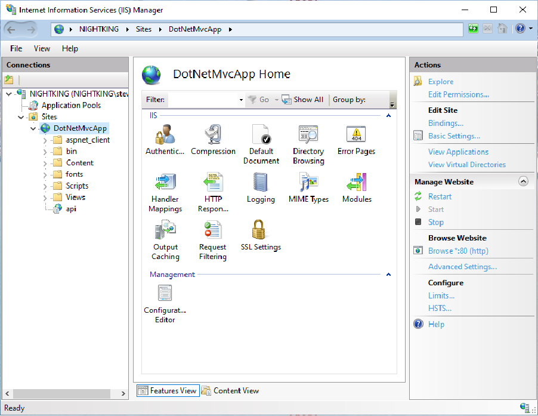
Figure 5-1. .NET Framework Site with .NET Core app in IIS.
The DotNetMvcApp site is hosted as an MVC 5 app running on .NET Framework 4.7.2. It has its own IIS app pool configured in integrated mode and running .NET CLR version 4.0.30319. The api app is an ASP.NET Core app running on .NET Framework 4.6.1 (net461). It was added to the DotNetMvcApp as a new IIS app and configured to use its own Application Pool. Its Application Pool is also running in integrated mode but is configured with a .NET CLR version of No Managed Code since it will be executed using the ASP.NET Core Module. The version of the ASP.NET Core app is just an example. It could also be configured to run on NET 5+. Though at that point, it would no longer be able to target
.NET Framework libraries (see Choose the Right .NET Core Version)
Configured in this manner, the only change that must be made in order for the ASP.NET Core app’s APIs to be routed properly is to change its default route template from [Route("[api/controller]")] to [Route("[controller]")].
Alternately the ASP.NET Core app can be another top-level web site in IIS. In this case, you can configure the original site to use a rewrite rule (with URL Rewrite) that will redirect to the other app if the path starts with /api. The ASP.NET Core app can use a different host header for its route so that it doesn’t conflict with the main app but can still respond to requests using root-based routes.
As an example, the same ASP.NET Core app used in Figure 5-1 can be deployed to another folder configured as an IIS web site. The site should use an app pool configured just as before, with No
Managed Code. Configure its bindings to respond to a unique host name on the server, such as api.contoso.com. To configure URL Rewrite to rewrite requests matching /api just add a new inbound rule at the IIS server (or individual site) level. Match the pattern ^/api(.*) and specify an Action type of Rewrite and a Rewrite URL of api.contoso.com/{R:1}. The combination of using (.*) in the matching pattern and {R:1} in the rewrite URL will ensure the rest of the path gets used with the new URL. With this in place, separate sites on the same IIS server can coexist running separate versions of .NET, but they can be made to appear to the Internet as one web app. Figure 5-2 shows the rewrite rule as configured in IIS with the separate web site.
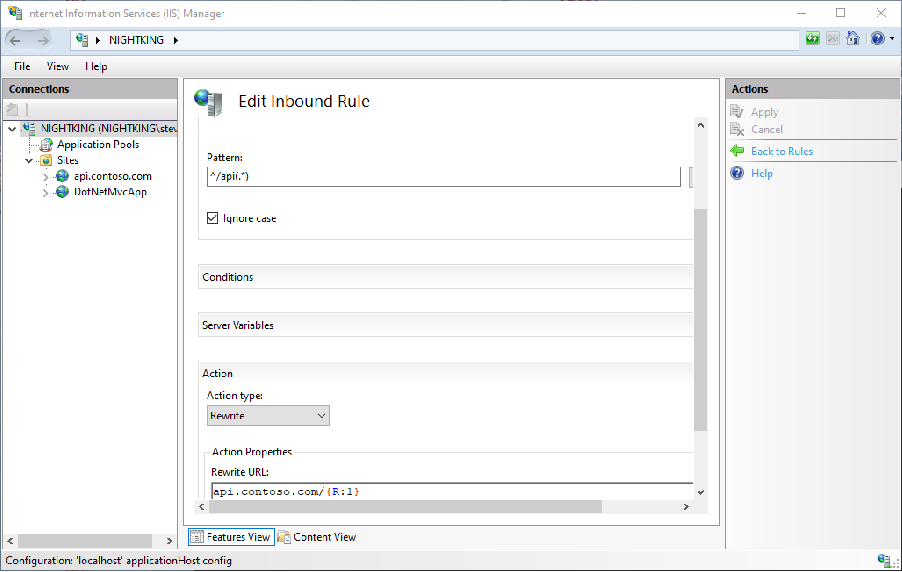
Figure 5-2. Rewrite rule to rewrite subfolder requests to another web site.
If your app requires single sign-on between different sites or apps within IIS, refer to the documentation on how to share authentication cookies among ASP.NET apps for detailed instructions on supporting this scenario.
Another alternative to IIS Rewrite rules is the use of a reverse proxy like YARP, which can facilitate incremental ASP.NET to ASP.NET Core Migration.
A common approach to porting large apps from .NET Framework to ASP.NET Core is to choose individual portions of the app to migrate one by one. As each piece of the app is ported, the entire app remains running and usable, with some parts of it running in its original configuration and other parts running on some version of .NET Core. By following this approach, a large app migration can be performed incrementally. This approach results in limiting risk by providing more rapid feedback and
reducing total surface area involved in testing. It also allows for more rapid realization of benefits of
.NET Core, such as performance increases. Although ASP.NET Core apps are no longer required to be hosted on IIS, IIS remains a very flexible and powerful web server that can be configured to support a variety of hosting scenarios involving both .NET Framework and ASP.NET Core apps on the same IIS instance or even hosted on different servers.
• Host ASP.NET Core on Windows with IIS
• URL Rewrite module and Application Request Routing
• URL Rewrite
• ASP.NET Core Module
• Share authentication cookies among ASP.NET apps
• Samples used in this section
• Incremental ASP.NET to ASP.NET Core Migration
CHAPTER |
|---|
Summary: Port existing ASP.NET Apps to .NET 7
In this book, you’ve been given the resources needed to decide whether it makes sense to port your organization’s existing ASP.NET apps running on .NET Framework to ASP.NET Core. You’ve learned about important considerations for choosing when it makes sense to migrate to .NET Core, and when it may be appropriate to keep (parts of) your app on .NET Framework. There are differences between
.NET Core versions and their capabilities and compatibilities with .NET Framework, and you learned how to choose the right version of .NET Core for your app.
Porting a large app often entails a fair amount of risk and effort. You learned how to mitigate this risk by employing one or more incremental migration strategies along with several deployment strategies for keeping partially migrated apps running in production.
There are many architectural differences between ASP.NET and ASP.NET Core. In chapter 2, you learned about many of these differences and how they relate to your app’s migration. This chapter covered everything from app startup and low-level middleware to high-level controller and Web API differences and new features enabling much better testing scenarios.
Large apps are often comprised of many projects and packages, and dependencies can play a major role in determining how easy or difficult migration may be. Chapter 3 helped you identify the sequence in which to migrate projects and how to understand and update your app’s dependencies. It also detailed additional strategies for migrating apps while keeping them running in production. In chapter 4, you saw how a real ASP.NET MVC reference app was migrated to ASP.NET Core. This chapter included a detailed breakdown of all the changes that were needed to take the existing app and port it over to run on ASP.NET Core. Refer back to it if you have specific questions about the porting process and some of its more specific details. Finally, chapter 5 detailed specific deployment scenarios focused on IIS. You saw how you can use your existing IIS web server to host parts of your app that have been ported to ASP.NET Core while keeping the app’s public URLs consistent. IIS includes great support for URL rewriting and request routing that enables it to host multiple versions of your site side by side or even on different servers, with no change to the public-facing URLs the app exposes.
86 CHAPTER 6 | Summary: Port existing ASP.NET Apps to .NET 7